СП 341.1325800.2017 «Подземные инженерные коммуникации. Прокладка горизонтальным»
О документе: разработчики, утверждение, регистрация, ключевые слова
1 ИСПОЛНИТЕЛИ: АО «Научно-исследовательский институт транспортного строительства» (АО ЦНИИС); Международная ассоциация специалистов горизонтального направленного бурения (МАС ГНБ)
2 ВНЕСЕН Техническим комитетом по стандартизации ТК 465 «Строительство»
3 ПОДГОТОВЛЕН к утверждению Департаментом градостроительной деятельности и архитектуры Министерства строительства и жилищно-коммунального хозяйства Российской Федерации (Минстрой России)
4 УТВЕРЖДЕН И ВВЕДЕН В ДЕЙСТВИЕ приказом Министерства строительства и жилищно-коммунального хозяйства Российской Федерации от 14 ноября 2017 г. № 1534/пр и введен в действие с 15 мая 2018 г.
5 ЗАРЕГИСТРИРОВАН Федеральным агентством по техническому регулированию и метрологии (Росстандарт)
6 ВВЕДЕН ВПЕРВЫЕ
В случае пересмотра (замены) или отмены настоящего свода правил соответствующее уведомление будет опубликовано в установленном порядке. Соответствующая информация, уведомление и тексты размещаются также в информационной системе общего пользования - на официальном сайте разработчика (Минстрой России) в сети Интернет
© Минстрой России, 2017
Настоящий нормативный документ не может быть полностью или частично воспроизведен, тиражирован и распространен в качестве официального издания на территории Российской Федерации без разрешения Минстроя России
СП 341.1325800.2017
Дата введения 2018-05-15
УДК ОКС 93.020
Ключевые слова: закрытый подземный переход, прокладка подземных инженерных коммуникаций, метод горизонтального направленного бурения, буровой раствор, скважина, расширение, трубопровод, протягивание
Введение
Настоящий свод правил разработан в соответствии с Федеральными законами: от 27 декабря 2002 г. № 184-ФЗ «О техническом регулировании», от 29 декабря 2004 г. №190-ФЗ «Градостроительный кодекс Российской Федерации», от 29 июня 2015 г. № 162-ФЗ «О стандартизации в Российской Федерации», от 30 декабря 2009 г. №384-ФЗ «Технический регламент о безопасности зданий и сооружений» и постановлением Правительства Российской Федерации от 29 октября 2010 г. № 870 «Технический регламент о безопасности сетей газораспределения и газопотребления».
Свод правил разработан авторским коллективом: Филиал АО ЦНИИС НИЦ «Тоннели и метрополитены» (руководитель работы И.М. Малый , канд. техн. наук Е.В. Щекудов , Н.А. Пухова , А.О. Боев , А.А. Шевченко , А.Д. Кобецкий ); АО ЦНИИС (канд. экон. наук И.А. Бегун ); Международная ассоциация специалистов горизонтального направленного бурения (канд. техн. наук А.И. Брейдбурд , С.Е. Каверин , Р.Н. Матвиенко , Р.Ф. Аминов , Е.В. Азаева , А.Р. Сабитов , М.Р. Фатхутдинов , К.Б. Павлов ); СРО НП «Объединение строителей подземных сооружений, промышленных и гражданских объектов» ( Р.Р. Салахов ).
\_\_\_\_\_\_\_\_\_\_\_\_\_\_\_\_\_\_\_\_\_\_\_\_\_\_\_\_\_\_\_\_\_\_\_\_\_\_\_\_\_\_\_\_\_\_\_\_\_\_\_\_\_\_\_\_\_\_\_\_\_\_\_\_\_\_\_
Underground engineering communications. Lining of by a method of the horizontal directional drilling
\_\_\_\_\_\_\_\_\_\_\_\_\_\_\_\_\_\_\_\_\_\_\_\_\_\_\_\_\_\_\_\_\_\_\_\_\_\_\_\_\_\_\_\_\_\_\_\_\_\_\_\_\_\_\_\_\_\_\_\_\_\_\_
| [13] | СНиП 12-03-2001 | Безопасность труда в строитель- стве. Часть 1. Общие требования |
|---|---|---|
| [14] | СНиП 12-04-2002 | Безопасность труда в строитель- стве. Часть 2. Строительное произ- водство |
| [15] | СП 12-136-2002 | Решения по охране труда и про- мышленной безопасности в проек- тах организации строительства и |
| [16] | ПБ 03-428-02 | Правила безопасности при строи- тельстве подземных сооружений |
| [17] | МДС 11-21.2009 | Методика определения точного ме- стоположения и глубины залега- ния, а также разрывов подземных коммуникаций (силовых, сигналь- ных кабелей, трубопроводов газо-, водоснабжения и др.), предотвра- щающих их повреждения при про- |
| ведении земляных работ | ||
|---|---|---|
| [18] | РД-91.040.00-КТН-308-09 | Строительство подводных перехо- дов нефтепроводов способом наклонно-направленного бурения |
| [19] | РД-11-05-2007 | Порядок ведения общего и (или) специального журнала учета вы- полнения работ при строительстве, реконструкции, капитальном ре- монте объектов капитального строительства |
| [20] | РД-11-02-2006 | Требования к составу и порядку ведения исполнительной докумен- тации при строительстве, рекон- струкции, капитальном ремонте объектов капитального строитель- ства и требования, предъявляемые к актам освидетельствования ра- бот, конструкций, участков сетей инженерно-технического обеспе- |
| [21] | СТО Газпром 18000.1-001-2014 | Единая система управления охра- ной труда и промышленной без- опасностью в ОАО «Газпром». Ос- новные положения |
1Область применения
- наружных сетей водоснабжения, водоотведения;
- тепловых сетей;
- кабельных линий электроснабжения, связи и телекоммуникаций;
- сетей газораспределения на территориях населенных пунктов, промышленных предприятий и межпоселковых;
- пересечениях вышеперечисленными коммуникациями естественных и искусственных преград, включая: водные преграды (реки, ручьи, водохранилища, заливы, каналы и т.п.), холмы и овраги, лесные и парковые массивы; железные и автомобильные дороги, трамвайные пути, линии метрополитена, территории аэродромов.
Примечание - Оборудование и технология ГНБ могут также применяться для ремонта, очистки и замены водопроводных и канализационных труб, устройства геотермаль- ных или водозаборных скважин, самотечных трубопроводов, горизонтальных скважин для очистки загрязненных территорий, вспомогательных скважин для извлечения из грунта существующих трубопроводов.
2Нормативные ссылки
В настоящем своде правил использованы нормативные ссылки на следующие документы:
ГОСТ 9.602-2016 Единая система защиты от коррозии и старения. Сооружения подземные. Общие требования к защите от коррозии
ГОСТ 12.1.007-76 Система стандартов безопасности труда. Вредные вещества. Классификация и общие требования безопасности
ГОСТ 17.1.3.13-86 Охрана природы. Гидросфера. Общие требования к охране поверхностных вод от загрязнения
ГОСТ 17.2.2.02-98 Охрана природы. Атмосфера. Нормы и методы определения дымности отработавших газов дизелей, тракторов и самоходных сельскохозяйственных машин
ГОСТ 908-2004 Кислота лимонная моногидрат пищевая. Технические условия
ГОСТ 2156-76 Натрий двууглекислый. Технические условия
ГОСТ 5100-85 Сода кальцинированная техническая. Технические условия
ГОСТ 5180-2015 Грунты. Методы лабораторного определения физических характеристик
ГОСТ 6996-66 Сварные соединения. Методы определения механических свойств
ГОСТ 7512-82 Контроль неразрушающий. Соединения сварные. Радиографический метод
ГОСТ 8731-74 Трубы стальные бесшовные Технические требования горячедеформированные.
ГОСТ 8733-74 Трубы стальные бесшовные холоднодеформированные и теплодеформированные. Технические требования
ГОСТ 10060-2012 Бетоны. Методы определения морозостойкости
ГОСТ 10704-91 Трубы стальные электросварные прямошовные. Сортамент
ГОСТ 10705-80 Трубы стальные электросварные. Технические условия
ГОСТ 10706-76 Трубы стальные электросварные прямошовные. Техни- ческие требования
ГОСТ 12248-2010 Грунты. Методы лабораторного определения характеристик прочности и деформируемости
ГОСТ 12536-2014 Грунты. Методы лабораторного определения грануло- метрического (зернового) и микроагрегатного состава
ГОСТ 16037-80 Соединения сварные стальных трубопроводов. Основные типы, конструктивные элементы и размеры
ГОСТ 17410-78 Контроль неразрушающий. Трубы металлические бес- шовные цилиндрические. Методы ультразвуковой дефектоскопии
ГОСТ 18599-2001 Трубы напорные из полиэтилена. Технические условия ГОСТ 20276-2012 Грунты. Методы полевого определения характеристик прочности и деформируемости
ГОСТ 20295-85 Трубы стальные сварные для магистральных газонефте- проводов. Технические условия
ГОСТ 23732-2011 Вода для бетонов и строительных растворов. Технические условия
ГОСТ 25100-2011 Грунты. Классификация
ГОСТ 25358-2012 Грунты. Метод полевого определения температуры
ГОСТ 30416-2012 Грунты. Лабораторные испытания. Общие положения ГОСТ 30672-2012 Грунты. Полевые испытания. Общие положения
ГОСТ 30732-2006 Трубы и фасонные изделия стальные с тепловой изоляцией из пенополиуретана с защитной оболочкой. Технические условия
ГОСТ 31244-2004 Контроль неразрушающий. Оценка физикомеханических характеристик материала элементов технических систем акустическим методом. Общие требования
ГОСТ 31447-2012 Трубы стальные сварные для магистральных газопроводов, нефтепроводов и нефтепродуктопроводов. Технические условия
ГОСТ 33213-2014 (ISO 10414-1:2008) Контроль параметров буровых растворов в промысловых условиях. Растворы на водной основе
ГОСТ Р 50838-2009 Трубы из полиэтилена для газопроводов. Технические условия
ГОСТ Р 50864-96 Резьба коническая замковая для элементов бурильных колонн. Профиль, размеры, технические требования
ГОСТ Р 51164-98 Трубопроводы стальные магистральные. Общие требования к защите от коррозии
ГОСТ Р 52779-2007 (ИСО 8085-2:2001, ИСО 8085-3:2001) Детали соединительные из полиэтилена из газопроводов. Общие технические условия
ГОСТ Р 55276-2012 (ИСО 21307-2011) Трубы и фитинги пластмассовые. Процедуры сварки нагретым инструментом встык полиэтиленовых (ПЭ) труб и фитингов, используемых для строительства газо- и водопроводных распределительных систем
ГОСТ Р 55724-2013 Контроль неразрушающий. Соединения сварные. Методы ультразвуковые
ГОСТ Р 56059-2014 Производственный экологический мониторинг. Общие требования
ГОСТ Р 56063-2014 Производственный экологический мониторинг. Требования к программам производственного экологического мониторинга
ГОСТ Р 57208-2016 Тоннели и метрополитены. Правила обследования и устранения дефектов и повреждений при эксплуатации
ГОСТ Р ИСО 3126-2007 Трубопроводы из пластмасс. Пластмассовые элементы трубопровода. Определение размеров
ГОСТ Р ИСО 21467-2011 Машины землеройные. Машины для горизонтального направленного бурения. Терминология и эксплуатационные показатели
ГОСТ Р МЭК 61386.24015-2014 Трубные системы для прокладки кабелей. Часть 24. Трубные системы для прокладки в земле
ГОСТ ISO 2531-2012 Трубы, фитинги, арматура и их соединения из чу- гуна с шаровидным графитом для водо- и газоснабжения. Технические условия
ГОСТ ISO 3183-2015 Трубы стальные для трубопроводов нефтяной и газовой промышленности. Общие технические условия
СП 18.13330.2011 «СНиП II-89-80* Генеральные планы промышленных предприятий» (с изменением №1)
СП 22.13330.2016 «СНиП 2.02.01-83* Основания зданий и сооружений» СП 25.13330.2012 «СНиП 2.02.04-88 Основания и фундаменты на вечно- мерзлых грунтах» (с изменением №1)
СП 31.13330.2012 «СНиП 2.04.02-84* Водоснабжение. Наружные сети и сооружения» (с изменениями №1, №2)
СП 32.13330.2012 «СНиП 2.04.03-85 Канализация. Наружные сети и сооружения»
СП 34.13330.2012 «СНиП 2.05.02-85* Автомобильные дороги» (с изменением №1)
СП 42.13330.2016 «СНиП 2.07.01-89* Градостроительство. Планировка и застройка городских и сельских поселений»
СП 45.13330.2017 «СНиП 3.02.01-87 Земляные сооружения, основания и фундаменты»
СП 47.13330.2016 «СНиП 11-02-96 Инженерные изыскания для строительства. Основные положения»
СП 48.13330.2011 «СНиП 12-01-2004 Организация строительства» (с изменением № 1)
СП 62.13330.2011 «СНиП 42-01-2002 Газораспределительные системы» (с изменениями № 1, № 2)
СП 66.13330.2011 Проектирование, строительство напорных сетей водоснабжения и водоотведения с применением высокопрочных труб из чугуна с шаровидным графитом
СП 74.13330.2011 «СНиП 3.05.03-85 Тепловые сети»
СП 119.13330.2012 «СНиП 32-01-95 Железные дороги колеи 1520 мм» (с изменением № 1)
СП 120.13330.2012 «СНиП 32-02-2003 Метрополитены» (с изменениями № 1, № 2)
СП 121.13330.2012 «СНиП 32-03-96 Аэродромы»
СП 124.13330.2012 «СНиП 41-02-2003 Тепловые сети»
СП 126.13330.2012 «СНиП 3.01.03-84 Геодезические работы в строительстве»
СП 246.1325800.2016 Положение об авторском надзоре за строительством зданий и сооружений
СП 249.1325800.2016 Коммуникации подземные. Проектирование и строительство закрытым и открытым способом
СанПиН 2.1.4.1110-92 Зоны санитарной охраны источников водоснабжения и водопроводов питьевого назначения
СанПин 2.1.5.980-00 Гигиенические требования к охране поверхностных вод
СанПин 2.2.1/2.1.1.1200-03 Санитарно-защитные зоны и санитарная классификация предприятий, сооружений и иных объектов
СанПин 2.2.3.1384-03 Гигиенические требования к организации строительного производства и строительных работ
Примечание - При пользовании настоящим сводом правил целесообразно проверить действие ссылочных документов в информационной системе общего пользования - на официальном сайте Федерального органа исполнительной власти в сфере стандартизации в сети Интернет или по ежегодно издаваемому информационному указателю «Национальные стандарты», который опубликован по состоянию на 1 января текущего года, и по выпускам ежемесячного информационного указателя, опубликованного в текущем году. Если заменен ссылочный документ, на который дана датированная ссылка, то следует руководствоваться заменяющим (измененным) документом. Если после утверждения настоящего свода правил в ссылочный документ, на который дана датированная ссылка, внесено изменение, затрагивающее положение, на которое дана ссылка, то это положение рекомендуется применять без учета данного изменения. Если ссылочный стандарт отменен без замены, то положение, в котором дана ссылка на него, применяется в части, не затрагивающей эту ссылку. Сведения о действии сводов правил целесообразно проверить в Федеральном информационном фонде.
3Термины и определения
В настоящем своде правил применены термины в соответствии с [1], а также следующие термины с соответствующими определениями:
- 3.1азимут скважины
- Угол между горизонтальной проекцией оси пилотной скважины и направлением юг-север, измеряемый по часовой стрелке.
- 3.2бентонит
- Коллоидная глина, состоящая в основном из минералов группы монтмориллонита с выраженными сорбционными свойствами и высокой пластичностью. Примечание - При производстве работ методом ГНБ бентонит применяется в виде глинопорошка.
- 3.3буровая головка (пионер)
- Передовой бур со сменными насадками.
- 3.4буровой канал
- Расширенная буровая скважина для протягивания трубопровода.
- 3.5буровой раствор
- Многокомпонентная дисперсная, как правило, бентонитовая жидкостная суспензия, применяемая при бурении пилотной скважины, последовательных расширениях и протягивании трубопровода.
- 3.6буровой шлам
- Разбуренная порода, смешанная с отработанным буровым раствором и выносимая из забоя скважины.
- 3.7вертлюг
- Шарнирное соединительное звено, предотвращающее передачу вращения от буровой колонны к протягиваемому трубопроводу.
- 3.8высокопрочный чугун с шаровидным графитом; ВЧШГ
- Тип чугуна, в котором графит присутствует преимущественно в шаровидной форме.
- 3.9горизонтальное направленное бурение
- Многоэтапная технология бестраншейной прокладки подземных инженерных коммуникаций при помощи специализированных мобильных буровых установок, позволяющая вести управляемую проходку по криволинейной траектории, расширять скважину, протягивать трубопровод. Примечание -Бурение ведется под контролем систем радиолокации и с использованием буровых растворов.Источник: СП 249.1325800.2016, статья 3.11
- 3.10диаметр расширения
- Максимальный диаметр отверстия, создаваемого при расширении пилотной скважины.Источник: ГОСТ Р ИСО 21467-2011, статья 3.2.12
- 3.11закрытый подземный переход; ЗП
- Линейный участок инженерной коммуникации, состоящий из одной или нескольких ниток трубопровода, прокладываемый бестраншейным способом под различными препятствиями и ограниченный точками входа и выхода пилотной скважины.
- 3.12забой скважины ( здесь )
- Находящаяся в бурении часть скважины.
- 3.13забойный двигатель
- Устройство в составе буровой колонны, преобразующее, как правило, гидравлическую энергию потока бурового раствора в механическую работу (вращательную или ударную) породоразрушающего инструмента. Примечание - Применяются забойные двигатели вращательного (турбобур, винтовой забойный двигатель) и ударного типов (гидро- и пневмоударник).
- 3.14защитный футляр ( здесь )
- Элемент конструкции трубопровода, защищающий его от внешних воздействий и повреждений на участках перехода под железными и автомобильными дорогами, существующими коммуникация- ми, зданиями и сооружениями, а также для прокладки электрических кабелей, кабелей связи, сигнальных кабелей. Примечание - Наличие защитного футляра позволяет выполнять ремонт коммуникаций без вскрытия поверхности земли.
- 3.15защитное композитное покрытие
- Многослойная система защиты труб и трубодеталей от механических повреждений и коррозии, состоящая из наружной оболочки (стальная, стальная оцинкованная, металлополимерная, полиэтиленовая) и закаченного под давлением между продуктовой трубой и оболочкой промежуточного слоя твердеющего цементно-полимерно-песчаного раствора, армированного полимерной фиброй или стальным каркасом (сеткой).
- 3.16калибровка
- Дополнительное укрепление и уплотнение стенок и проверка готовности бурового канала к протягиванию трубопровода, путем пропуска калибра - секции (элемента) основной трубы максимального проектного диаметра или расширителя.
- 3.17колонна буровых штанг (буровая колонна) ( здесь )
- Ряд последовательно собираемых, по мере проходки, буровых штанг, оснащенный необходимыми приспособлениями и применяемый для передачи крутящего момента и тягового усилия от опорной рамы буровой установки к буровой головке, расширителю, протягиваемому трубопроводу, подачи бурового раствора к буровому инструменту.
- 3.18насадка буровой головки ( лопатка)
- Сменный буровой инструмент, обеспечивающий разрушение, оптимальный угол резания грунта и траекторию проходки. Примечание - Подбирается в зависимости от типа проходимого грунта.
- 3.19окружающая среда
- Совокупность компонентов природной среды, природных и природно-антропогенных объектов, а также антропогенных объектов * .
- 3.20пакет труб
- Два и более трубопровода, предназначенные к одновременной прокладке в одну скважину закрытого подземного перехода. \_\_\_\_\_\_\_\_\_ * Здания, дороги, инженерные сети.
- 3.21пилотная скважина
- Направляющая скважина, бурение которой осуществляется в первую очередь.
- 3.22подводный переход
- Закрытый подземный переход, пересекающий водную преграду и ограниченный запорной арматурой или, при ее отсутствии, горизонтом высоких вод с вероятностью превышения не более 10 %.
- 3.23приближение скважины
- Минимально допускаемое расстояние в свету между буровым каналом и пересекаемым (прилегающим к трассе ЗП) объектом.
- 3.24расширение скважины ( здесь )
- Технологический процесс увеличения первоначального диаметра пилотной скважины с помощью расширителя.
- 3.25регенерация бурового раствора
- Очистка и обогащение раствора, обеспечивающие его повторное применение.
- 3.26риски при ГНБ
- Возможность возникновения непредвиденных и аварийных ситуаций в процессе прокладки коммуникаций методом ГНБ, приводящих к срыву плановых сроков и удорожанию работ, повреждению технологического оборудования, ущербу здоровью технического персонала и других лиц, негативным воздействиям на окружающую среду.
- Примечание - Риски возникают вследствие
- недостаточного объема и недостоверности инженерных изысканий, ошибок при проектировании трассы и конструкции трубопровода, неправильного подбора оборудования, влияния активных и пассивных помех работе системе локации, нарушения технологии работ.
- 3.27система локации
- Измерительная система, позволяющая определять и контролировать положения буровой головки и другие характеристики технологического процесса проходки пилотной скважины.
- 3.28ситуационно-топографические условия
- Совокупность факторов природного и искусственного происхождения, определяющих положение трассы ЗП и организационно-технические решения по производству работ.
- 3.29створ перехода
- Плановое положение и вертикальная плоскость, соответствующие проектной оси подземного перехода.
- трасса перехода
- Положение оси линейной коммуникации (трубопровода, кабеля и др.), отвечающее ее проектному положению на местности.Источник: СП 249.1325800.2016, статья 3.44
- 3.31точка входа/выхода
- Планово-высотное положение начала/завершения бурения пилотной скважины.
- 3.32угол входа/выхода скважины ( здесь )
- Угол между осью пилотной скважины в точке входа/выхода и линией горизонта.
4Обозначения и сокращения
В настоящем своде правил применяются следующие сокращения:
ГНБ - горизонтальное направленное бурение;
ЗП - закрытый переход (подземный);
ЗКП - защитное композитное покрытие;
НД - нормативный документ;
НВД - насос высокого давления (для подачи бурового раствора);
ПВХ - поливинилхлорид;
ПОС - проект организации строительства;
ПП - полипропилен;
ППР - проект производства работ (по закрытому переходу инженерных коммуникаций методом ГНБ);
ППУ - пенополиуретан;
ПЭ - полиэтилен;
СПО - спуско-подъемные операции (буровой колонны и трубопровода);
SDR - стандартное размерное отношение наружного диаметра трубы к толщине стенки.
5Общие положения
- техническая невозможность или наличие официальных запретов местных органов власти, уполномоченных организаций и землепользователей на прокладку инженерных сетей траншейным способом;
- необходимость обеспечения сохранности существующих элементов инфраструктуры и окружающей среды в границах проектируемого линейного объекта;
- при соответствующем технико-экономическом обосновании.
- направленное бурение пилотной скважины по заданной проектом трассе;
- однократное или последовательно-многоразовое расширение скважины до образования бурового канала, позволяющего протягивать трубопровод проектного диаметра, при необходимости, калибровка бурового канала (см. 8.6.12);
- протягивание коммуникационного трубопровода (защитного футляра) через буровой канал, как правило, по направлению от точки выхода бура на поверхность к буровой установке.
Примечание - В стесненных условиях направление протягивания определяется возможностью размещения площадки для раскладывания и сборки трубопровода.
6Особенности инженерных изысканий
6.1Общие положения
Примечание - В городских условиях, как правило, выполняются инженерногеодезические, инженерно-геологические и инженерно-геотехнические виды изысканий.
\_\_\_\_\_\_\_\_\_
* Уточняется по результатам изысканий и проектирования.
6.2Инженерно-геодезические изыскания
6.3Инженерно-геологические изыскания
Отчет по инженерно-геологическим изысканиям по профилю перехода и строительным площадкам должен содержать:
- разрезы и буровые колонки с грунтовыми прослойками и напластованиями, мощности слоев и их наклоны;
- положение, количественную и качественную оценки элементов и зон со сложными геологическими условиями по 5.6;
- физико-механические характеристики свойств грунтов по 6.3.10;
СП 341.1325800.2017
- данные об уровнях и режимах подземных вод (с учетом сезонных колебаний).
Примечание - Расположение точек и глубину статического (динамического) зондирования по трассе перехода следует назначать в соответствии с СП 249.1325800.
- плотность грунта и его частиц, влажность (по ГОСТ 5180 и ГОСТ 30416);
- коэффициент пористости;
- гранулометрический состав (по ГОСТ 12536) для крупнообломочных грунтов и песков;
- влажность на границах пластичности и текучести, число пластичности и показатель текучести для глинистых грунтов (по ГОСТ 5180);
- угол внутреннего трения, удельное сцепление, модуль деформации и коэффициент поперечной деформации грунтов (по ГОСТ 12248, ГОСТ 20276, ГОСТ 30416 и ГОСТ 30672);
- гранулометрический состав, вид и процентное содержание заполнителя крупнообломочного грунта (по ГОСТ 12536) для крупнообломочных грунтов и песков;
- временное сопротивление при одноосном сжатии в воздушно-сухом и водонасыщенном состоянии, коэффициент выветрелости, показатели размягчаемости и растворимости (по ГОСТ 12248) для скальных грунтов;
- суммарная влажность, суммарная льдистость, льдистость за счет ледяных включений (по ГОСТ 5180, ГОСТ 25100), температура мерзлого грунта (по ГОСТ 25358), температура начала замерзания грунта для мерзлых грунтов.
6.4Инженерно-гидрометеорологические изыскания
- определение горизонта высоких вод заданной обеспеченности (1, 2, 3, 5, 10 %) и нанесение на продольный профиль;
- определение меженного уровня водной преграды;
- русловую съемку для прогноза профиля предельного размыва русла и деформаций берегов на расчетный период эксплуатации перехода, но не менее 25 лет, нанесение результатов на продольный профиль;
- определение необходимых гидрологических и климатических характеристик (отсутствие затопления поймы, ледохода, заторов и других неблагоприятных факторов).
6.5Инженерно-экологические изыскания
6.6Инженерно-геотехнические изыскания
7Проектирование перехода
7.1Общие требования к проектированию
- задания на проектирование;
- технических условий на прокладываемую коммуникацию, выдаваемых эксплуатирующими организациями;
- нормативных документов на проектирование и прокладку конкретного вида подземной коммуникации.
\_\_\_\_\_\_\_\_\_
* Отсутствие полигонов приема отходов и инертных веществ.
СП 341.1325800.2017
- проект планировки территории;
- результаты инженерных изысканий;
- проект прокладки коммуникации, составной частью которого должен быть ЗП на примыкающих участках;
- требования к характеристикам трубопровода, защитного и антикоррозионного покрытия (для стальных труб);
- ситуационный план М 1:10000, 1:5000, 1:2000 или 1:1000 с нанесенной трассой проектируемой коммуникации;
- сводный план М 1:200, М 1:500 или М 1:1000 проектируемых и существующих инженерных коммуникаций и сооружений;
- действующий инженерно-топографический план М 1:200, М 1:500, М 1:1000.
Примечания
1 Для линейных объектов городов с развитой инженерной инфраструктурой рекомендуется применение инженерно-топографических планов М 1:200.
2 Топографические планы М 1:1000 применяются для трубопроводов прокладываемых вне населенных пунктов;
- НД эксплуатирующих организаций на проектирование коммуникации;
- задание на проектирование с указанием участков ЗП, диаметра и числа проектируемых труб, состава проекта ЗП;
- продольный профиль по проектируемой коммуникации в горизонтальном масштабе, соответствующем масштабу инженерно-топографического плана и вертикальном масштабе 1:100;
- другие документы в зависимости от конкретных условий строительства.
7.2Состав, содержание и порядок согласования проекта
7.3Проектирование трассы перехода
7.3.1 Профиль трассы
7.3.1.1 Профиль трассы ЗП выполняемого методом ГНБ от точки забуривания до выхода (входа) на поверхность (в котлован или шурф), в зависимости от ситуационно-топографических и инженерно-геологических условий, может включать прямолинейные и криволинейные участки. Радиусы изгиба криволинейных участков определяются по 7.3.2 и эксплуатационными требованиями для конкретного вида прокладываемой коммуникации. Под пересекаемыми капитальными зданиями и сооружениями следует, как правило, предусматривать прямолинейные участки.
7.3.1.2 При проектировании трассы закрытого перехода необходимо учитывать вид прокладываемой коммуникации, тип и диаметр трубопровода, а также вид применяемого технологического оборудования.
Чертеж продольного профиля должен содержать следующие данные:
- уровни грунта по всей длине пересечения и отметки в соответствующей системе координат;
- уровень грунтовых вод;
- уровень водоема, при необходимости, отметки горизонтов высоких и низких вод;
- углы входа и выхода;
- параметры составляющих участков бурового профиля (длины, радиусы изгиба, углы поворота, заглубление);
- горизонтальную и общую длину закрытого перехода.
Примечание - Длина закрытого перехода определяется длиной трассы бурения между точками входа и выхода и может превосходить длину протягиваемого трубопровода за счет дополнительных технологических интервалов на концах перехода (см. 7.3.1.7);
- допускаемые отклонения точки выхода;
- приближение прокладываемой коммуникации к пересекаемому объекту;
- заглубление в критических зонах (например, под озерами, реками, в точке входа и т.п.).
Примечание - Допускаемые отклонения точки выхода пилотной скважины от проектного створа должны определяться в зависимости от вида прокладываемой коммуникации, длины бурения, инженерно-геологических условий строительства.
7.3.1.3 Трасса скважины для обеспечения необходимого заглубления должна начинаться с прямолинейного участка, наклонного к горизонту под углом входа в грунт. В общем случае после прямолинейного участка должен следовать криволинейный вогнутый участок с расчетным радиусом изгиба, затем прямолинейный (горизонтальный или наклонный) участок до следующей кривой (без нарушения допустимого радиуса изгиба) и так до точки выхода по прямолинейному тангенциальному участку с наклоном под углом выхода к поверхности. Пример построения продольного профиля скважины ГНБ приведен на рисунке 7.1.
7.3.1.4 Угол входа скважины в грунт, в зависимости от условий строительства, назначения трубопровода, вида труб и применяемого оборудования, как правило, принимается от 7 º до 23 º, угол выхода скважины на поверхность от 1 º до 45 º. При определении в проекте углов входа и выхода следует учитывать необходимость устройства технологических шурфов (приямков) или возможность размещения буровой установки в котловане.
7.3.1.5 При построении трассы бурения начальные участки входа и выхода рекомендуется выполнять прямолинейными с целью повышения
Рисунок 7.1 - Пример построения продольного профиля трассы скважины ГНБ
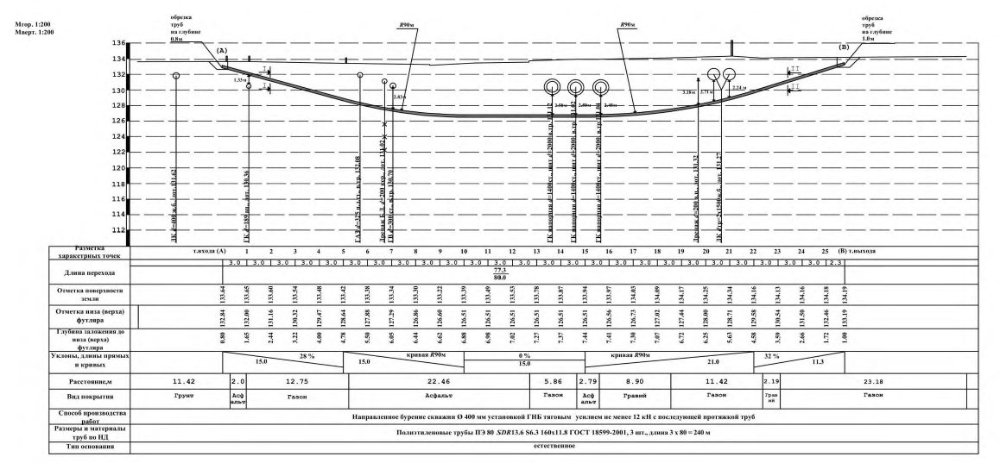
технологических возможностей реализации профиля ГНБ при производстве работ.
Примечание - Поверхностные слои грунта, как правило, менее плотные, поэтому при проходке трудно выдерживать необходимый радиус изгиба и возможны выходы бурового раствора.
Длины прямолинейных участков на входе и выходе рекомендуется увеличивать с возрастанием глубины залегания плотных связанных грунтов, диаметра бурового канала, жесткости буровой колонны.
7.3.1.6 Выбор положения точек входа и выхода скважины следует осуществлять с учетом существующей застройки, наличия коммуникаций и других подземных сооружений, необходимости поворота прокладываемой коммуникации после ЗП. В местах размещения строительных площадок на точках входа/ выхода не должно быть заглубленных сооружений и коммуникаций, пересекающих трассу скважины.
7.3.1.7 При надлежащем обосновании допускается, что общая длина скважины ГНБ (А - С, рисунок 7.2) может превосходить длину протягиваемого трубопровода (А - В, рисунок 7.2), за счет проходки вспомогательных технологических интервалов в виде нисходящего начального (В - С, рисунок 7.2) или восходящего конечного хода.
Проходка вспомогательного технологического хода, разработка необходимых шурфов и котлованов должны быть учтены в проекте ЗП в составе ведомости объемов работ (ВР, см. таблицу Г.1 приложения Г).
Примечания
1 Восходящий конечный технологический ход сокращается по длине или исключается при расположении точки выхода А (рисунок 7.2) в шурфе (котловане) ниже поверхности земли.
2 Протягивание производится до проектной точки конца трубопровода В (рисунок 7.2), в которой разрабатывается приемный шурф (котлован) для отсоединения буровой колонны и дальнейшей работы с трубопроводом.
Рисунок 7.2 - Пример продольного профиля трассы ГНБ с нисходящим начальным технологическим ходом
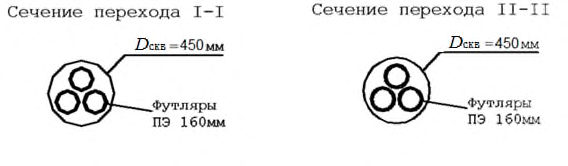
7.3.1.8 Разбивку трассы ЗП на составляющие участки, определение их параметров по 7.3.1.2, общей длины скважины и необходимого для проходки числа буровых штанг, а также подготовку графической части проектной документации по таблице Г.1 (приложение Г) следует выполнять по 7.3.1 - 7.3.5 с учетом принятых значений углов входа/выхода.
7.3.1.9 Подбор буровой установки, необходимой для проходки пилотной скважины и протягивания трубопровода по разработанной трассе ЗП, выполняется в соответствии с А.2.4 - А.2.6 приложения А, соответствующие составы типовых комплектов оборудования ГНБ и производственной бригады приведены в приложении Д.
7.3.1.10 Методика определения геометрических параметров трассы, а также значений необходимых усилий подачи буровой колонны и крутящего момента для проходки пилотной скважины, общего усилия тяги и крутящего момента для расширения скважины и протягивания трубопровода приведена в [9] или других нормированных и апробированных на практике методиках.
Расчеты рекомендуется выполнять с применением специализированного программного обеспечения, автоматизирующего процесс расчетов и подготовки графической документации.
7.3.1.11 Длина плети трубопровода L т, м, необходимая (и достаточная) для протягивания, определяется по формуле
где L расчетная длина скважины по профилю перехода для закладки трубопровода, м; δ возможное увеличение фактической длины бурового канала (перебур), определяемое с учетом допусков по отклонению точки выхода, м; a - участки трубопровода от 1,5 до 2,5 м вне бурового канала.
Примечание - Рекомендуется принимать возможное увеличение фактической длины для полиэтиленовых труб 0,10 L, м; для стального трубопровода - от 0,03 L до 0,05 L, м.
7.3.2 Радиусы изгиба криволинейных участков трассы
7.3.2.1 Проектный радиус изгиба трассы прокладки трубопровода R и , м, в любом случае должен превышать минимальный допустимый радиус изгиба трубы T и R , м, или минимальный допустимый радиус изгиба буровых штанг R ш, м, по А.3.1 приложения А:
где К н =1,3 коэффициент надежности для стальных труб;
К н =1,5 коэффициент надежности для буровых штанг;
К н =2,0 коэффициент надежности для пластиковых труб.
7.3.2.2 Минимально допустимый радиус изгиба стальных труб T и R ,м, по условиям прочности, с учетом внутреннего давления в трубе на стадии эксплуатации, определяется по формуле
где Е -модуль упругости стали, МПа; d н - наружный диаметр трубы, м;
Ry - расчетное сопротивление стали труб и стыковых соединений (по пределу текучести), МПа.
По технологическим условиям прокладки радиус изгиба трассы трубопровода из стальных труб должен составлять не менее 1200· d н, а для труб диаметром 820 мм и более - не менее 1400· d н , м.
7.3.2.3 Минимально допустимый радиус изгиба полиэтиленовых труб T и R , м, определяется, в зависимости от температуры воздуха при протягивании трубопровода и характеристики труб по таблице 7.1.
Таблица 7.1
| Стандартное размерное отношение | Минимальные радиусы изгиба при темпера- туре прокладки, ºС | Минимальные радиусы изгиба при темпера- туре прокладки, ºС | Минимальные радиусы изгиба при темпера- туре прокладки, ºС |
|---|---|---|---|
| Стандартное размерное отношение | От 0 до 10 | От 10 до 20 | Более 20 |
| От 9 до 17 | 50 ⋅ 𝑑 н | 35 ⋅ 𝑑 н | 20 ⋅ 𝑑 н |
| От 21 до 26 | 75 ⋅ 𝑑 н | 50 ⋅ 𝑑 н | 30 ⋅ 𝑑 н |
| От 33 до 41 | 125 ⋅ 𝑑 н | 85 ⋅ 𝑑 н | 50 ⋅ 𝑑 н |
Для пучка ПЭ труб минимально допустимый радиус изгиба пт и R , м, составляет:
где n - число труб в пучке.
7.3.2.4 Минимально допустимый радиус изгиба T и R , м криволинейных участков трассы для сборных трубопроводов из труб ВЧШГ по 7.4.11 определяется с учетом установленных изготовителем допусков по углу отклонения в соединении и длины звеньев собираемых труб по формуле
где l - длина звена трубы ВЧШГ прокладываемого трубопровода, м; α - допускаемый угол отклонения в соединении, град.
Примечание - Допуски по углу отклонения в соединении и допускаемому усилию при протягивании принимаются по рекомендациям производителя в зависимости от типа и диаметра собираемых труб.
7.3.2.5 При необходимости выполнения одновременного изгиба трассы в плане и профиле необходимо обеспечивать условие: комбинированный радиус изгиба трассы прокладки трубопровода должен превышать минимально допустимые значения по 7.3.2.1 - 7.3.2.4.
где комб и R - комбинированный радиус изгиба трассы, м;
R иг - радиус изгиба трассы в горизонтальной плоскости, м;
R ив - радиус изгиба трассы в вертикальной плоскости, м.
7.3.3 Пересечения и приближения трассы к существующим объектам, защитные футляры
7.3.3.1 Положение трассы ЗП в плане при пересечении линейных объектов: сооружений метрополитена, железных и автомобильных дорог, водных препятствий, существующих коммуникаций и т.п. - следует предусматривать так, чтобы угол пересечения составлял, как правило, от 60º до 90°. Если ситуационно-топографические условия этого не позволяют, то пересечения допускается выполнять в доступных технологических коридорах при условии согласования особенностей конкретного проектного решения с эксплуатирующими и иными заинтересованными организациями.
7.3.3.2 Для предотвращения аварийных ситуаций и выходов бурового раствора необходимо соблюдать минимально допускаемые приближения трассы в плане и профиле к существующим железным и автомобильным дорогам, зданиям и сооружениям, действующим коммуникациям, регламентированные соответствующими нормативными документами. Во всех случаях расстояние в свету между буровым каналом и верхом покрытия автодороги, подошвой рельсов железной дороги или трамвайных путей, основанием насыпи, фундаментом, наружной поверхностью подземного сооружения или коммуникации рекомендуется принимать не менее шести диаметров бурового канала, но не менее 1,5 м.
7.3.3.3 Участки трубопроводов, прокладываемые методом ГНБ на переходах через железные и автомобильные дороги всех категорий с усовершенствованным покрытием капитального и облегченного типов, а также при пересечении существующих коммуникаций должны предусматриваться в защитном футляре в соответствии с СП 34.13330, СП 119.13330 и норм на конкретный вид коммуникаций.
Примечание - Концы футляров для газопроводов систем газораспределения должны быть заделаны гидроизоляционным материалом с устройством на одном конце трубки с запорной арматурой для контроля утечек газа в межтрубном пространстве.
7.3.3.4 Внутренний диаметр футляра следует принимать не менее чем на 100 мм больше наружного диаметра трубопровода, в зависимости от вида прокладываемой коммуникации. При определении диаметра футляра необходимо учитывать размеры опорно-центрирующих и направляющих устройств, а также зазор, необходимый для прокладки продуктовой трубы.
7.3.3.5 При надлежащем обосновании и по согласованию с эксплуатирующими организациями допускается взамен футляров на пересечениях по 7.3.3.1 применять трубы с защитным композитным покрытием армированным стальным арматурным каркасом (см. приложение Е).
Примечание - На выходе и входе трубы газопровода из земли футляры допускается не устанавливать при условии наличия на ней защитного покрытия, стойкого к внешним воздействиям.
7.3.4 Трасса ГНБ на территории аэродромов
7.3.4.1 Участки коллекторов водоотводов и дренажных систем, прокладываемых методом ГНБ на территории аэродромов в соответствии с СП 121.13330, должны проходить вдоль кромок покрытий взлетно-посадочной полосы на расстоянии не менее 15 м. Глубину заложения следует принимать в соответствии с 7.3.3.2, но не менее глубины промерзания грунтов при свободной от снега поверхности. В районах с глубиной промерзания свыше 1,5 м допускается укладывать трубы в зоне промерзания, предусматривая при этом теплоизоляцию.
7.3.4.2 При прокладке методом ГНБ инженерных коммуникаций на территориях аэродромов при пересечении с такими элементам аэродрома, как взлетно-посадочная полоса, рулежная дорожка, перрон и места стоянки воздушных судов, глубину заложения следует принимать по результатам расчетов воздействия эксплуатационных нагрузок, но не менее 3,5 ÷ 4,0 м от поверхности до верха трубы, независимо от ее диаметра. Окончательная глубина прокладки трубопровода согласовывается с соответствующими службами аэропорта.
Примечание - В качестве мероприятия, обеспечивающего дополнительную прочность трубопровода, возможно использование защитных футляров или труб с ЗКП, армированным стальным арматурным каркасом (см. приложение Е).
7.3.4.3 В стесненных ситуационно-топографических условиях, не позволяющих обеспечивать соблюдение требований настоящего свода правил в части трассы и размещения рабочих площадок, проект прокладки подземных коммуникаций горизонтальным направленным бурением на территории аэродромов допускается разрабатывать на основании согласованных технических условий.
7.3.5 Трасса ГНБ в охранной зоне метрополитена *
7.3.5.1 Для инженерных коммуникаций, прокладываемых горизонтальным направленным бурением и пересекающих в плане линии метрополитена, не предъявляются особые требования к их расположению и конструкции в следующих случаях:
- расстояние от верха (низа) конструкции сооружения метрополитена до низа (верха) трубопровода более 20 м;
- между сооружением метрополитена и трубопроводом залегают устойчивые грунты по ГОСТ 25100 (плотные глины, нетрещиноватые полускальные и скальные породы, другие равноценные им по физико-механическим свойствам) мощностью не менее 6,0 м.
\_\_\_\_\_\_\_\_\_
* По СП 120.13330.
СП 341.1325800.2017
Примечание - В отдельных случаях, в зависимости от инженерно-геологических условий, указанные выше параметры могут быть изменены по согласованию с организациями, проектирующими и эксплуатирующими метрополитен.
7.3.5.2 В случаях, отличных от условий 7.3.5.1, к расположению и конструкциям инженерных коммуникаций, прокладываемых горизонтальным направленным бурением в зоне сооружений метрополитена, предъявляются требования по 7.3.5.3 - 7.3.5.8.
7.3.5.3 Пересечение коммуникациями над и под станционными сооружениями метрополитена допускается только в случае строительства в стесненных условиях городской застройки, при условии разработки компенсационных технических решений (например, применение стальных и полимерных футляров или труб с ЗКП, армированных стальным арматурным каркасом по приложению Е), исключающих нарушение гидроизоляции и подлежащих согласованию с организациями, проектирующими и эксплуатирующими метрополитен.
7.3.5.4 Трасса ГНБ на участке пересечения с сооружениями метрополитена должна быть прямолинейной в плане и профиле, с уходом за габариты конструкций не менее чем на 10 м, после чего допускаются криволинейные участки.
7.3.5.5 Напорные трубопроводы теплосети, канализации и водопровода, пересекающие выше или ниже подземные сооружения метрополитена, должны заключаться в защитные стальные футляры, концы которых должны выводиться за габариты сооружений не менее чем на 10 м в каждую сторону.
Примечание - Футляры допускается не устанавливать в соответствии с 7.3.3.5.
7.3.5.6 Прокладка газопроводов под подземными сооружениями метрополитена не допускается.
7.3.5.7 Вертикальное расстояние в свету между буровым каналом и верхом (низом) конструкции метрополитена при его пересечении трассой ГНБ должно соответствовать 7.3.3.2.
7.3.5.8 Прокладка трубопроводов под наземными линиями метрополитена должна предусматриваться в футлярах в соответствии с СП 119.13330 для элек- трифицированных железных дорог. Концы футляров должны выводиться за пределы ограждения территории метрополитена не менее чем на 3 м.
Примечание - Футляры допускается не устанавливать в соответствии с 7.3.3.5.
7.4Области применения и характеристики протягиваемых труб
- водопровода на переходах под железными и автомобильными дорогами, через водные преграды и овраги, на участках с расчетным внутренним давлением более 1,5 МПа, в соответствии с СП 31.13330;
- канализации (в качестве напорных труб) в соответствии с СП 32.13330;
- тепловых сетей в соответствии с СП 124.13330;
- газопроводов в соответствии с СП 62.13330;
- защитных футляров, внутри которых затем прокладываются коммуникационные трубы или кабели в оболочках.
\_\_\_\_\_\_\_\_\_
Трубы с ППУ - ПЭ изоляцией.
СП 341.1325800.2017
При соответствующем обосновании, допускается использовать полимерные трубы повышенной прочности в качестве защитных футляров.
Примечание - Расчетные характеристики применяемых труб следует принимать в соответствии с НД на трубы.
Примечания
1 В ГОСТ 18599, ГОСТ Р 50838 и [11] приведены классификация и маркировка труб по сериям S и стандартному отношению SDR , значения которых определяются по формулам:
где d н - наружный диаметр трубы, мм; s - толщина стенки трубы, мм.
Трубы с защитным утяжеляющим композитным (бетонным) покрытием (см. приложение Е) целесообразно применять для предотвращения всплытия трубопровода в буровом канале при протягивании, для строительства подводных переходов, а также переходов под железными и автомобильными дорогами, под аэродромными покрытиями, при пересечении существующих коммуникаций.
- трубы из ВЧШГ с внутренним цементно-песчаным покрытием, внешним цинковым или цинко-алюминиевым покрытием и завершающим эпоксидным или на основе синтетических смол покрытием.
Примечание - В качестве дополнительной защиты от механических повреждений при протягивании в условиях абразивных пород и твердых включений используется полиэтиленовый рукав;
- гибкие раструбно-замковые соединения звеньев труб, прочность которых обеспечивается распределением осевой нагрузки вокруг раструба и ствола трубы.
Примечание - Примеры основных характеристик и типоразмеров труб из ВЧШГ, а также их допуски по углу отклонения в соединении, радиусу изгиба трубопровода, усилию при протягивании и диаметру бурового канала под раструбно-замковые соединения приведены в [27].
7.5Особенности расчета протягиваемых труб
где σ пр N - продольное осевое растягивающее напряжение в стенке трубы от протягивания трубопровода с учетом упруго-изогнутых участков, МПа;
Rу - расчетное сопротивление растяжению материала труб и стыковых соединений, МПа.
где Р п -усилие протягивания трубопровода по 7.5.4 - 7.5.6, кН;
Е - модуль упругости материала трубы, МПа;
R и - радиус изгиба трассы прокладки трубопровода по 7.3.2, м.
7.6Проектирование переходов кабельных линий
- 40, 50, 63 и 90 мм при прокладке кабелей связи;
- 110,160 мм при прокладке кабелей связи и наружного освещения;
- 110,160, 225, 280, 315 мм для прокладки силовых кабелей.
Примечание - Применение труб меньшего диаметра возможно при наличии проектного обоснования, а также согласований заказчика и эксплуатирующей организации.
Рекомендуемые соотношения между общим числом труб-оболочек диаметром 160 мм ** в протягиваемом пакете, числом действующих кабелей и минимальным диаметром бурового канала приведены в таблице 7.2. Сечения закрытых переходов для прокладки кабелей показаны на рисунке 7.5 .
\_\_\_\_\_\_\_\_\_
* Наибольшее расстояние между внешними гранями труб в составе пакета, с учетом возможного увеличения за счет концевых захватных устройств.
** Наиболее распространенные при прокладке кабельных линий.
Таблица 7.2 - Соотношения числа труб-оболочек, действующих кабелей и диаметра бурового канала
| Число одновременно затяги- ваемых труб-оболочек диа- метром 160 мм | Число действующих кабелей (по одному в трубе) | Минимальный диаметр буро- вого канала, мм |
|---|---|---|
| 2 | 1 | 400 |
| 3 | 2 | 450 |
| 4 | 2 - 3 | 500 |
| 5 | 3 | 520 |
| 6 | 4 | 560 |
| 7 | 4 - 5 | 600 |
| 8 | 5 - 6 | 700 |
Примечание - Для других диаметров труб-оболочек диаметр бурового канала принимается по таблице 8.3, исходя из максимального габарита предполагаемого к протягиванию пакета труб.
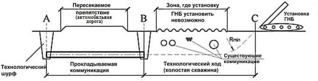
а) - для электрокабелей до 35 кВт, полиэтиленовые трубы (футляры) Ø160мм; б) - для кабелей наружного освещения и связи, полиэтиленовые трубы (футляры) Ø110мм
Рисунок 7.5 - Сечения закрытых переходов для прокладки кабелей
Примечание - Диаметр скважин D скв указан с учетом 20% запаса относительно протягиваемых труб.
Примечание - Могут применяться другие предусмотренные проектом способы герметизации труб-оболочек.
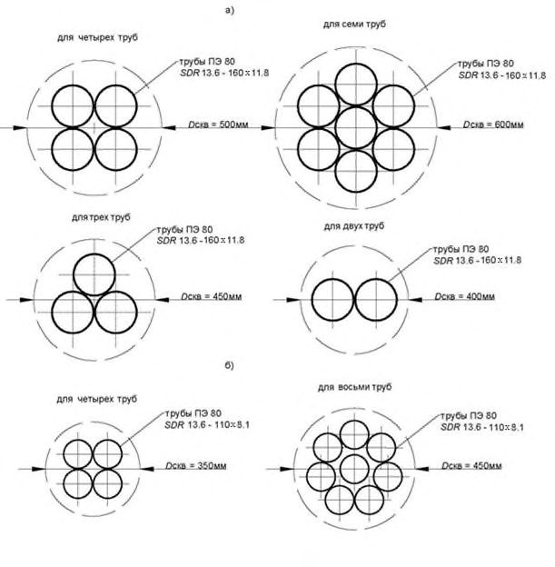
- а) - для пакета полиэтиленовых труб (футляров);
- б) - для одиночных полиэтиленовых труб (футляров)
Рисунок 7.6 - Варианты шурфов для вывода кабелей из перехода
СП 341.1325800.2017
8Производство работ
8.1Организационно-техническая подготовка
Примечание - Характеристики оборудования, рекомендации по его подбору, элементы технического и инфраструктурного оснащения приведены в приложении А, типовой состав бригады для выполнения работ по ГНБ - в приложении Д.
42 8.1.5 Производитель работ должен выполнять оценку и управление возможными рисками, связанными с прокладкой подземных инженерных комму- никаций методом ГНБ, осуществлять организационно-технические мероприятия по предотвращению и снижению рисков, приведенных в приложении В.
8.2Требования к проекту производства работ
- календарный график прокладки ЗП (см. 8.5, 8.6, 8.8);
- топографические планы строительных площадок со стороны буровой установки (точка входа) и со стороны трубы (точка выхода) (см. 8.3);
- план и продольный профиль монтажной зоны сборки плети трубопровода (см. 8.7);
- пояснительную записку, содержащую технологические решения (см. 8.5); состав и характеристики бурового раствора; значения максимальных скоростей бурения, протягивания, необходимых объемов и давления подачи бурового раствора; способ и этапы расширения скважины (см. 8.6); диаметр бурового канала; порядок развертывания катушек трубопровода или монтажа из сборных звеньев (см. 8.7); порядок протягивания трубопровода в скважину и предельно допустимое значение усилия тяги (см. 8.8); объемы и методы операционного контроля за производством работ при бурении, расширении и протя- гивании трубопровода (см. 11.3); мероприятия по обеспечению производства работ в холодный период года (см. 8.10); мероприятия по обеспечению безопасного выполнения работ (см. 12); объем отходов, места утилизации отработанного бурового раствора и шлама, природоохранные мероприятия и возможные мероприятия по обеспечению сохранности пересекаемых транспортных, городских и других объектов (см. 13).
Требования охраны труда и безопасности приведены в [15], [16].
- расположение, размер и тип основных элементов комплекса ГНБ (буровая установка, кабина управления, сменное оборудование, блок электроснабжения и т.п.);
- расположение и размеры блоков приготовления и регенерации, емкостей для хранения бурового раствора;
- расположение и размеры возможных приямков и шламоприемников;
- расположение складского участка и, при необходимости, крановой площадки, мастерских, столовых, прорабских, подъездных и внутриплощадочных дорог, ограждения строительной площадки.
Пример типовой схемы расположения оборудования на стройплощадках в точках входа/выхода трубопровода приведен на рисунке 8.1 .
- конструкцию, высоту и положение монтажных роликовых опор, расстояние между ними по 8.7.9 - 8.7.13;
- радиус перегиба трубопровода на стадии монтажа по 8.7.15 - 8.7.18.
Площадка для размещения буровой установки (точка входа)
Площадка для подготовки трубопровода (точка выхода)
1буровая установка; 2 буровые штанги; 3 насос высокого давления; 4 добавки к раствору; 5 установка приготовления бурового раствора; 6 склад бентонита (с навесом); 7 блок рециркуляции; 8 водяной насос; 9 контейнер для материалов; 10 мастерская; 11 яма для бурового раствора; 12 бытовые помещения; 13 собранный трубопровод; 14 роликовые опоры; 15 стойка для труб и кран; 16 расходный резервуар; 17 экскаватор; 18 яма для бурового раствора (дополн); 19 блок рециркуляции бурового раствора
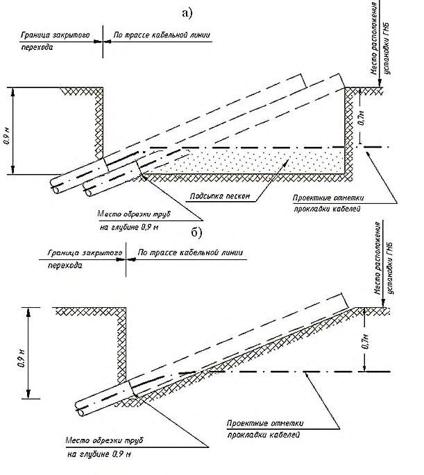
Рисунок 8.1 - Пример типовой схемы расположения основного технологического оборудования на строительных площадках
СП 341.1325800.2017
- топографические планы строительных площадок для точек входа/выхода;
- технологические схемы и порядок выполнения буровых работ по 8.4 8.6, сборки и протягивания трубопровода по 8.7 - 8.8;
- порядок операционного контроля по 11.3.
8.3Подготовительные работы и обустройство стройплощадок
- геодезическая разбивка трассы и вынос в натуру точек начала забуривания и выхода бура из грунта;
- уточнение местоположения и глубины заложения существующих коммуникаций и подземных объектов по трассе ЗП с участием технического заказчика.
Примечание - При отсутствии данных их определение с использованием специализированного оборудования (георадары, трассоискателии и др.) приведено в [17];
- подготовка строительных площадок для размещения буровой установки, насосно-смесительного узла для приготовления бурового раствора, склада буровых штанг, контейнера хранения для бентонита, полимеров, строительных материалов, бытовых помещений (см. рисунок 8.1);
- монтаж буровой установки в точке начала забуривания с обеспечением предусмотренного конструкцией закрепления, для восприятия усилий подачи при бурении и обратной тяги при протягивании трубопровода, а также заземления установки;
- контроль исправности и работоспособности локационной системы.
46 8.3.2 При необходимости размещения буровой установки на слабых или просадочных грунтах, значительных тяговых и вертикальных нагрузках следует предусматривать дополнительные меры по укреплению основания и закреплению буровой установки, например: устройство монолитной бетонной плиты или укладку бетонных плит, свайного основания, подпорной шпунтовой стенки, внешних упоров. Для достижения проектного угла входа пилотной скважи-
СП 341.1325800.2017 ны (см. 7.3.1.4) допускается, в соответствии с ППР, размещение буровой установки под наклоном к горизонту с обеспечением ее надежного закрепления.
Типовые размеры буровых установок различных классов и рабочих площадок для их размещения и обеспечения производительной работы приведены в таблице 8.1.
Таблица 8.1 - Типовые размеры буровых установок и рабочих площадок
| Значение параметра, м, для буровой установки класса | Значение параметра, м, для буровой установки класса | Значение параметра, м, для буровой установки класса | |
|---|---|---|---|
| Наименование параметра | Мини | Миди | Макси, Мега |
| Длина буровых штанг | От 1,5 до 3,0 | От 3 до 9 | От 6 до 12 |
| Площадь основания уста- новки (ширина × длина) | От 0,9×3,0 до 2,1×6,0 | От 2,1×6,0 до 2,4×13,5 | Более 2,4×13,5 |
| Рекомендуемые размеры рабочей площадки | 6×18 | 30×45 | 40÷50×60÷100 |
Примечание - При работах в стесненных условиях размеры и конфигурации строительных площадок могут быть изменены, с учетом соблюдения требований безопасного производства работ.
- от 15 до 60 м в длину по оси перехода от точки выхода скважины, в ширину 12 м;
- от 47 до 75 м в длину по оси перехода от точки входа, в ширину от 15 до 45 м.
- сбора выходящего из скважины бурового раствора;
- ввода бурового инструмента и расширителей в скважину;
- подачи трубопровода для протягивания.
Размеры выемок определяются углами входа/выхода, диаметром бурения, характеристиками бурового оборудования. При необходимости обеспечения требуемого заглубления скважины буровая установка может быть размещена в специальном стартовом котловане.
8.4Дополнительные мероприятия по обеспечению производства работ в сложных инженерно-геологических условиях
- 48 8.4.1 При наличии по трассе бурения скважины сыпучих галечниковых и гравийных грунтов, рыхлых песчаных или глинистых грунтов текуче-
СП 341.1325800.2017 пластичной консистенции, а также напорных (артезианских) вод должны предусматриваться дополнительные мероприятия по обеспечению производства буровых работ:
- крепление обсадной трубой;
- предварительное закрепление грунтов;
- устройство разгрузочных и наблюдательных пьезометрических скважин.
8.4.2.1 Длина обсадной трубы принимается до устойчивых (связных) слоев грунта. Ее внутренний диаметр должен превышать не менее чем на 100 мм диаметр наибольшего из применяемых расширителей, с тем, чтобы скважинный снаряд свободно проходил в трубе при буровых работах и протягивании.
8.4.2.2 Обсадная труба, как правило, формируется из отдельных звеньев, погружаемых в грунт забивкой, забуриванием или вдавливанием.
8.4.2.3 Метод погружения должен выбираться в зависимости от конкретных инженерно-геологических условий и применяющегося технологического оборудования.
8.4.2.4 После завершения прокладки трубопровода обсадная труба может быть полностью или частично извлечена. Для предотвращения осадок поверхности обсадную трубу целесообразно оставить в грунте.
8.4.2.5 Обсадную трубу в нижней точке входа/выхода скважины рекомендуется применять для установки внутреннего запорного клапана и резинового уплотнения с целью обеспечения циркуляции и предотвращения выхода бурового раствора.
8.4.3.1 Предварительное закрепление с поверхности производится в соответствии с СП 22.13330 и СП 45.13330.
Примечание - Как правило, применяется метод инъекции цементного раствора.
СП 341.1325800.2017
8.4.3.2 Допускается закрепление грунта с помощью твердеющего раствора (как правило, смеси бурового и цементного растворов), подаваемого через скважину и буровую колонну при протягивании трубопровода, при этом срок схватывания раствора должен превышать время, необходимое для завершения протягивания.
Примечание - Разгрузочные скважины предназначены для снижения избыточного давления бурового раствора, предотвращения гидравлического разрыва сплошности окружающего грунта, связанного с нарушением циркуляции и неконтролируемыми выбросами раствора.
8.4.4.1 Число и расположение разгрузочных скважин устанавливается проектом (см. раздел 7), исходя из конкретных условий строительства.
8.4.4.2 Глубина разгрузочных скважин принимается из условия приближения к буровому каналу (после прохода наибольшего расширителя) на расстояние, как правило, от 0,2 до 0,5 м.
8.4.4.3 Типовая схема разгрузочной скважины приведена на рисунке 8.2.
\_\_\_\_\_\_\_\_\_
Расстояние до объекта, на котором возможны негативные воздействия при бурении.
1 - заглушка с вентиляционным отверстием; 2 - грунтовая засыпка; 3 - заполнение тампонажным глиноцементным раствором; 4 - ствол скважины диаметром 200 мм; 5 - ПВХ-труба диаметром от 75 до 100 мм; 6 - гравийная засыпка от 0,5 до 1,0 м; 7 - перфорированный фильтр; 8 - водонепроницаемая заглушка; 9 - буровой ствол скважины ГНБ после расширения
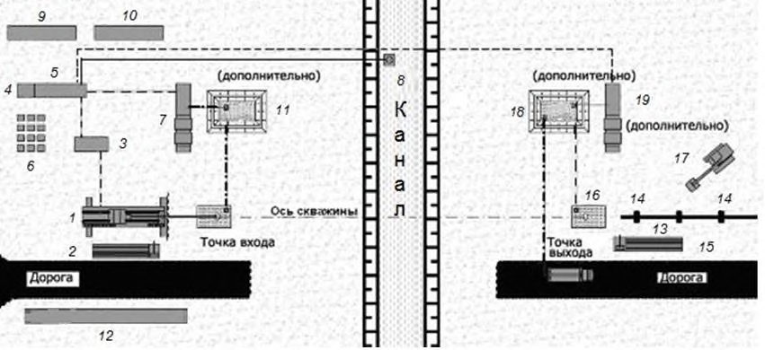
Рисунок 8.2 -Типовая схема разгрузочной скважины
8.5Бурение пилотной скважины
- 8.5.3.1 Тип применяемого передового бура следует выбирать по А.3.2 (приложение А) в зависимости от инженерно-геологических условий по трассе перехода.
- 8.5.3.2 Для скальных пород по ГОСТ 25100 целесообразно применение забойного двигателя повышающего производительность буровых работ. При этом необходимо учитывать увеличение расхода бурового раствора, соответственно характеристикам оборудования.
Рисунок 8.3 - Направленное бурение пилотной скважины
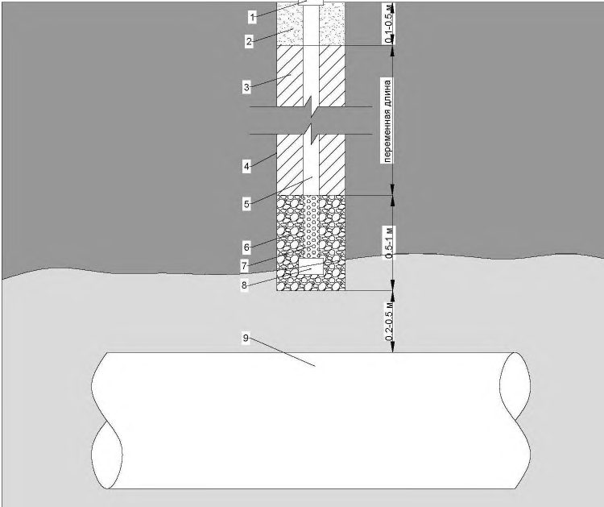
Примечание - Забойный двигатель - устройство в составе буровой колонны, преобразующее, как правило, гидравлическую энергию потока бурового раствора в механическую работу (вращательную или ударную) породоразрушающего инструмента.
Примечание - На точность измерений могут оказывать влияние активные * и пассивные ** помехи от посторонних источников и определяемые физическими свойствами грунтов.
Примечание - При необходимости, буровая головка может быть отведена назад на длину одной или нескольких штанг с последующей коррекцией траектории бурения.
Примечание - Функции, параметры, составы, расчеты, указания по приготовлению, применению и контролю буровых растворов приведены в разделе 9.
\_\_\_\_\_\_\_\_\_
* Генерирующие электромагнитные сигналы приборы, устройства, кабели и др.
** Подземные металлические объекты, токопроводящие породы, соленая вода и др.
Таблица 8.2 - Скорость бурения пилотной скважины
| Группа грунтов по буримости (приложение И) | Скорость бурения пилотной скважины υ пил. , м/ч, при применении | Скорость бурения пилотной скважины υ пил. , м/ч, при применении |
|---|---|---|
| Группа грунтов по буримости (приложение И) | винтового забойного двигателя | гидромонитора |
| I | - | 60 и более |
| II | - | 40 - 60 |
| III | 40 - 50 | 30 - 40 |
| IV | 30 - 40 | 20 и менее |
| V | 20 - 30 | - |
| VI | 10 - 20 | - |
| VII | 8 и менее | - |
| VIII | - | - |
| IX | - | - |
| X | - | - |
| XI | - | - |
| XII | - | - |
где L - расчетная длина скважины по профилю перехода, м; δ - возможное увеличение фактической длины бурового канала, м (см. 7.3.1.11); υ пил - скорость бурения пилотной скважины, м/ч.
8.6Расширение скважины
Примечания
- 1 Специализированные расширители (римеры) для различных типов грунтов оснащаются высокопрочными режущими кромками, породоразрущающими насадками и производят резание, скалывание и уплотнение грунта.
- 2 Основные типы и характеристики расширителей скважин приведены в А.3.2 приложения А.
Рисунок 8.4 - Расширение скважины
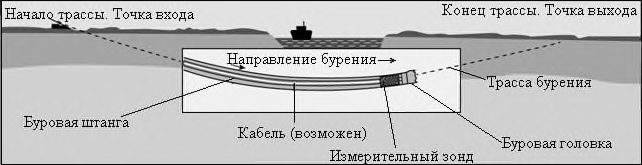
СП 341.1325800.2017 механическими свойствами и структурными особенностями разбуриваемых грунтов.
Таблица 8.3
| Наружный диаметр трубо- провода d н или пакета труб, мм | Длина перехода, м | Диаметр бурового канала не менее, мм |
|---|---|---|
| До 200 | До 50 | 1,2 d н |
| До 200 | 50 - 99 | 1,3 d н |
| До 200 | 100 - 299 | 1,4 d н |
| До 200 | Св. 300 | d н +100 |
| 201-599 | 50 - 99 | 1,3 d н |
| 201-599 | 100 - 299 | 1,4 d н |
| 201-599 | Св. 300 | 1,5 d н |
| Св. 600 | Св. 100 | d н +300 |
где D расш - диаметр текущего расширения скважины, м;
D пр - диаметр предыдущего расширения пилотной скважины, м;
F -грунтовый коэффициент расхода бурового раствора, принимается по таблице Л.1 приложения Л;
Q расш - интенсивность подачи бурового раствора при расширении, м³ /мин.
Примечание - Превышение расчетной скорости бурения на этапе расширения приводит к обжиму бурового инструмента, снижение - к перерасходу бурового раствора.
где L - расчетная длина скважины по профилю перехода, м; δ - возможное увеличение фактической длины бурового канала, м (см. 7.3.1.11);
СП 341.1325800.2017 υ расш - скорость расширения, м/мин.
При нескольких последовательно выполняемых расширениях суммируются временные затраты на каждую операцию.
- для рыхлых и малопрочных грунтов грунтов, соответствующих I - III группам по буримости для механического вращательного бурения (приложение И), максимальная площадь забоя не более 0,5 м² , диаметр расширителя первой ступени Dp1 - до 0,8 м;
- для грунтов средней прочности, соответствующих IV - VI группам по буримости для механического вращательного бурения (приложение И), максимальная площадь забоя не более 0,3 м² , диаметр расширителя первой ступени D p1 - до 0,6 м;
- для прочных скальных грунтов, соответствующих VII и выше группам по буримости для механического вращательного бурения (приложение И), максимальная площадь забоя не более 0,2 м² , диаметр расширителя первой ступени D p1 - до 0,5 м.
СП 341.1325800.2017 трубы максимального диаметра) по отсутствию недопустимых деформаций и механических повреждений покрытия в соответствии с требованиями нормативных технических документов для конкретного типа трубопровода.
8.7Сборка трубопровода и организация технологического изгиба для подачи в грунт
Примечание - Предварительная растяжка всей плети труб или сборка передового и последующих участков является предпочтительной, по сравнению с посекционной сборкой в процессе протягивания, за счет сокращения времени и снижения риска заклинивания трубопровода в скважине при перерывах в протягивании.
- СП 31.13330 - для наружных сетей водоснабжения;
- СП 66.13330 - для напорных сетей водоснабжения и водоотведения из труб ВЧШГ;
- СП 32.13330 - для наружных систем канализации;
- СП 124.13330 - для тепловых сетей;
- СП 62.13330, ГОСТ 9.602, ГОСТ 6996, ГОСТ 7512, ГОСТ 16037, ГОСТ Р 55724 - для сетей газораспределения из стальных труб;
- СП 62.13330, ГОСТ 18599, ГОСТ Р 50838, ГОСТ Р 52779, ГОСТ Р 55276 - для сетей газораспределения из полимерных труб.
Сборка плетей трубопроводов для систем водоснабжения и канализации из полимерных материалов приведена в [11].
В качестве роликовых опор, как правило, используются стальные рамы, на которые крепятся ролики из твердой резины или полиуретана с шаровыми подшипниками. На инвентарных опорах ширина расположения роликов должна регулироваться для возможности использования для протягивания труб разных размеров.
- равномерное распределение нагрузки плети трубопровода;
- минимальный коэффициент трения качения трубопровода по роликам;
- поперечную устойчивость уложенного трубопровода при его перемещении;
- сохранность изоляционного покрытия труб при протаскивании.
- предотвращения недопустимых деформаций трубопровода (прогиб, выгиб);
- обеспечения сохранности внешнего защитного покрытия;
- минимизации осадок опор для тяжелого трубопровода.
Несущая способность конструкции и основания роликовых опор, с учетом возможной перегрузки за счет неполной работы ближайших опор, должна превышать расчетную нагрузку не менее чем в 1,5 раза. Нагрузки на опоры должны регулироваться путем изменения их высотного положения.
Рисунок 8.5 - Схема организации технологического изгиба для подачи трубопровода
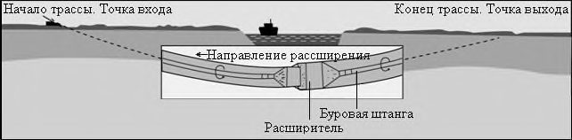
- изгибная жесткость труб;
- угол входа в скважину;
- уклон спусковой дорожки;
- допустимые нагрузки на опоры.
Для стальных труб радиус технологического перегиба собранной на поверхности плети R пер, м, должен быть не менее
где d н - наружный диаметр трубы, м.
- устройства наклонной трассировки подходного участка в створе трубопровода (спусковой дорожки) с учетом допустимого радиуса естественного изгиба трубопровода;
- подъема трубопровода распределенными вдоль плети трубоукладчиками при разной высоте удерживающих их катков.
Примечание - Для обеспечения перегиба трубопровода с заданным углом входа в скважину, в качестве передвижных направляющих опор, на подходном участке могут использоваться трубоукладчики с троллейными подвесками.
8.8Протягивание трубопровода
Примечание - Для труб, протягиваемых пакетом, из-за возможного изменения их взаиморасположения, необходима маркировка их концов (клеймение, нестираемая краска, надпилы и т.п.).
Примечание - В отдельных случаях диаметр расширителя при протяжке трубы может приниматься менее диаметра бурового канала, но не менее диаметра протягиваемого трубопровода.
Сборка буровой колонны для протягивания трубопровода через буровой канал на буровую установку приведена на рисунке 8.6. Форма оголовка должна снижать лобовое сопротивление бурового раствора и препятствовать врезанию трубопровода в грунт при протягивании.
1 - буровая штанга; 2 - расширитель; 3 - шарнирное соединение; 4 - вертлюг; 5 - оголовок; 6 - трубопровод
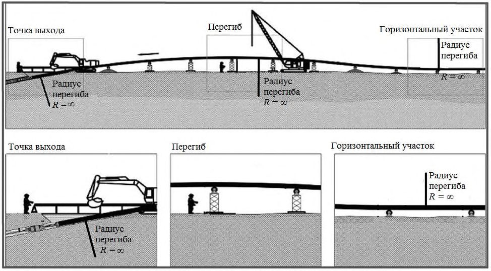
Рисунок 8.6 - Сборка буровой колонны для протягивания трубопровода через буровой канал на буровую установку или с помощью специальных регистрирующих динамометров, устанавливаемых в составе протягиваемой буровой колонны, и фиксировать в журнале производства работ.
Примечание - Всплытие трубопровода в буровом канале приводит к повышению трения протягивания.
8.8.9.1 Балластировка осуществляется непосредственным заливом воды в полость рабочего трубопровода. Подача балластной воды в находящуюся в скважине часть трубопровода должна выполняться через промежутки времени в зависимости от темпа протягивания.
8.8.9.2 Необходимый объем воды, придающий нулевую плавучесть при протягивании, в расчете на 1 пог. м находящегося в буровом канале трубопровода, 𝑉 B 1 , м³ /м, следует определять по выражению:
где 𝑑н - наружный диаметр трубы, м; ρ - плотность бурового раствора, г/см³ ;
Р тр - масса 1 пог. м протягиваемой трубы, кг/м.
8.8.9.3 Для залива воды при балластировке трубопровода должны быть подготовлены водопроводная линия, подтянутая к точке выхода на трубной стороне, и вводимый внутрь трубы водовод.
- 8.8.9.4 Не допускается перелив воды и увеличение нагрузок на подходном участке трубопровода к скважине. Вода заполнения должна выводиться из трубопровода после протягивания.
- 8.8.9.5 Допускается проводить балластировку протягиваемого трубопровода по технологии «труба в трубе»:
- извлекаемыми внутренними полиэтиленовыми трубами с заполнением их водой или другими материалами;
- для футляра - с помощью предварительно протянутого в нем рабочего трубопровода.
- установка лебедки или буровой установки со стороны противоположной собранной плети трубопровода (подготовленным к протяжке кабелям);
- присоединение оголовка протягиваемой плети трубопровода (кабеля) к тросу или колонне штанг.
- протягивание плети трубопровода (кабеля) в защитный футляр (трубуоболочку) с помощью лебедки или установки ГНБ;
- завершение протягивания плети трубопровода после того, как передовой элемент достигнет места установки ГНБ.
8.9Завершающие работы
- демонтаж технологических устройств и систем;
- удаление и утилизация остатков буровых жидкостей;
- удаление и утилизация остатков бурового шлама;
- герметизация концов проложенного трубопровода путем установки заглушек;
- демонтаж ограждений и обратная засыпка рабочих котлованов, приямков и т.п.;
- очистка и планировка рабочих площадок на точках входа и выхода;
- очистка и техобслуживание буровых штанг и инструмента;
- ремонт и восстановление подъездных дорог
- восстановление плодородного слоя грунта в случаях нарушения.
- стыковка проложенного трубопровода с участками открытой прокладки;
- протягивание (закладка) в проложенные футляры трубопровода, силовых или слаботочных кабелей по 8.8.10;
- устройство на концах проложенных трубопроводов колодцев, камер, дренажных систем, запорных устройств и др.
8.10Особенности производства работ в холодный период года
- буровая установка и узел приготовления бурового раствора, оборудование для его перекачки и регенерации должны размещаться в тепляке;
- трубопроводы для подачи и откачки бурового раствора должны быть утеплены.
Примечание - Возможно применение труб по ГОСТ 30732 с тепловой изоляцией из пенополиуретана и защитной оболочкой;
- для приготовления буровых растворов должна применяться вода температурой от 4 С до 40 С.
9Буровые растворы
9.1Требования к буровому раствору и его составу при ГНБ
- удержание выбуренного грунта во взвешенном состоянии;
- очистку ствола скважины от выбуренного грунта;
- предотвращение налипания на буровой инструмент и обжима буровой колонны за счет стабилизации активности связных грунтов (по ГОСТ 25100) при контакте с водой;
- предотвращение обрушения стенок скважины в несвязных грунтах (по ГОСТ 25100), за счет образования тонкой и прочной фильтрационной корки с низким уровнем водопроницаемости;
- охлаждение бурового инструмента;
- снижение коэффициента трения;
- передачу гидравлической энергии забойному двигателю.
Таблица 9.1
| Параметр бурового раствора | Рекомендуемое зна- чение | Средство измере- ния | Допустимая погреш- ность измерения |
|---|---|---|---|
| Плотность, г/см³ | 1,01 - 1,04 | Рычажные весы | ± 0,01 |
| Условная вязкость, с: глина суглинок/супесь песок, песок гравелистый, гравийный грунт, трещиноватые скальные грунты | 30 - 80 40 - 60 40 - 80 от 80 и выше | Вискозиметр Марша | ± 0, 5 |
| Уровень водоотдачи, см³ / 30 мин: несвязные грунты связные и скальные грунты | Не более 15 не более 35 | Фильтр-пресс ( Ǿ 5 дюймов) | ± 0, 5 |
| Содержание песка, масс.% | Не более 1 | Набор для опре- деления содер- жания песка | ± 0, 5 |
| Примечание - Значения параметров буровых растворов определяются по ГОСТ 33213 и в соот- ветствии с эксплуатационной документацией на средства измерения. | Примечание - Значения параметров буровых растворов определяются по ГОСТ 33213 и в соот- ветствии с эксплуатационной документацией на средства измерения. | Примечание - Значения параметров буровых растворов определяются по ГОСТ 33213 и в соот- ветствии с эксплуатационной документацией на средства измерения. | Примечание - Значения параметров буровых растворов определяются по ГОСТ 33213 и в соот- ветствии с эксплуатационной документацией на средства измерения. |
Таблица 9.2
| Разновидность крупнообломочных грунтов и песков | Размер частиц, мм | Статическое напря- жение сдвига (СНС (10 с)) | Статическое напря- жение сдвига (СНС (10 с)) | Динамическое напря- жение сдвига (ДНС) | Динамическое напря- жение сдвига (ДНС) |
|---|---|---|---|---|---|
| Размер частиц, мм | фунт / 100 фут 2 | дПа | фунт / 100 фут 2 | дПа | |
| Крупнообломочные: - гравийный (при неокатанных гранях - дресвяный) | > 2 (>50%) | > 40 | ≥ 200 | ≥ 60 | ≥ 300 |
| Пески: - гравелистый; | > 2 | 15 - 30 | 75 - 150 | 20 - 40 | 100 - 200 |
| - крупный; | > 0,50 | 8 - 20 | 40 - 100 | 15 - 25 | 75 - 125 |
| - средней крупности; | > 0,25 | 7 - 12 | 35 - 60 | 12 - 20 | 60 - 100 |
| - мелкий / пылеватый. | > 0,10 | 5 - 8 | 25 - 40 | 10 - 15 | 50 - 75 |
Таблица 9.3
| Состав бурового раствора | Состав бурового раствора |
|---|---|
| Вода | 94%-98% |
| Бентонит | 2%-6% |
| Специальные добавки | до1% |
- уровень кислотности (показатель активности ионов водорода, pH) от 8 до 10 ед.;
- уровень жесткости (содержание ионов кальция) не более 5 ° Ж (14 Dh );
- содержание хлоридов не более 1000 мг/л.
Примечание Dh - немецкие градусы, ° Ж - градус жесткости.
Примечание - Для повышения показателя pH воды и снижения уровня жесткости, как правило, применяется кальцинированная сода (карбонат натрия) по ГОСТ 5100, для снижения показателя pH воды и удаления ионов кальция (например, в случае цементного загрязнения), гидрокарбонат натрия (пищевая сода) по ГОСТ 2156 или лимонная кислота по ГОСТ 908.
- улучшение реологических параметров по таблице 9.2 (например, добавка ксантан);
- контроль уровня фильтрации (например, добавка полимер PAC).
Примечание - Расход специальных добавок, отвечающих за реологические характеристики и уровень фильтрации, зависит от качества и концентрации используемого бентонита;
- стабилизацию активности связанных грунтов (набухание, налипание) при контакте с водой (например, добавка полимер PHPA);
- снижение коэффициента трения (например, добавка лубрикант);
- обеспечение тампонирования трещин и предотвращение потери циркуляции раствора по 9.2.6, 9.2.7 (например, добавка сшитый полиакриламид).
- грунтовые условия по трассе проходки;
- параметры скважины (длина, диаметр);
- технические характеристики буровой установки (сила тяги, крутящий момент);
- рекомендации производителя компонентов;
- практического опыта применения разных составов.
Рекомендуемые составы буровых растворов на основе модифицированного бентонита и с применением специальных добавок, в зависимости от группы грунтов по буримости (приложение И), приведены в приложении Н.
9.2Приготовление, расчет необходимых объемов и подача бурового раствора
Примечание - Состав оборудования для приготовления бурового раствора приведен в А.4 (приложение А).
- заливка в емкость для перемешивания необходимого количества воды.
Примечание - При необходимости через бункер приема добавляются компоненты водоподготовки по 9.1.6, доводящие значения параметров воды до необходимых значений по 9.1.5. Последующие компоненты вводятся в подготовленную воду;
- через бункер приема добавляется бентонит по 9.1.7 и выполняется перемешивание смеси в течение 5 - 20 мин;
- последовательно вводятся специальные добавки по 9.1.8 с перемешиванием смеси в течение 3 - 5 мин после каждой добавки.
Примечание - Рекомендуется производить кратковременное перемешивание в течение 5 - 10 мин с периодичностью один раз в 2 - 3 ч.
СП 341.1325800.2017
Примечание - Поддержание циркуляции бурового раствора значительно снижает риски аварийных ситуаций, связанных с процессом построения скважины.
9.3Очистка и регенерация бурового раствора
Примечание - В зависимости от компоновки системы, можно добиться различной степени очистки раствора, включая практически полную очистку (до 90 %).
9.4Утилизация отработанного бурового раствора
10Особенности прокладки подводных переходов
где В 1 - наибольшее из значений прогнозируемого размыва, дноуглубления или мощности техногенного грунта, м.
- бурение пилотной скважины при расположении точки входа на расстоянии не менее 10 м от береговой линии;
- расширение и калибровка пилотной скважины по направлению от буровой установки («от себя»);
- проталкивание стального футляра с предварительным контролем сварных стыков;
- протягивание плети основного трубопровода (кабелей) внутри футляра по 8.8.10 с берега или с трубоукладочной баржи.
11Контроль выполнения и сдача работ
11.1Организация контроля
11.2Входной контроль
Примечание - Испытания полиэтиленовых труб проводятся по ГОСТ Р 50838, контроль размеров - по ГОСТ Р ИСО 3126 при температуре (23 ± 5)° С. Контроль стальных сварных труб - по ГОСТ 31447, труб и изделий из чугуна с шаровидным графитом - по ГОСТ ISO 2531.
11.3Операционный контроль за производством работ
- контроль выполнения подготовительных работ;
- контроль состава и показателей качества бурового раствора;
- контроль бурения пилотной скважины;
- контроль расширения скважины;
- контроль сборки и готовности трубопровода к протягиванию;
- контроль устройства спусковой дорожки (если предусмотрено в ППР);
- контроль протягивания трубопровода.
- положения разбивочной оси перехода, существующих сооружений, коммуникаций, препятствий;
- планировки и обустройства строительных площадок;
- размеров и расположения технологических выемок (приямков);
- положения буровой установки на точке входа и начального угла забуривания.
Примечание - Задача контроля раствора - получение достоверной информации о текущих значениях его параметров с целью своевременного обнаружения их отклонений от принятых значений и регулирования его свойств при изменении условий бурения.
11.3.3.1 Перед началом буровых работ определяются контрольные значения параметров качества по 9.1.2 для принятого в соответствии с 9.1.9 состава раствора, возможна его корректировка с учетом фактически поставленных компонентов.
11.3.3.2 В процессе бурения пилотной скважины, расширения и протягивания трубопровода должен осуществляться постоянный контроль параметров приготовляемого и подаваемого в скважину бурового раствора.
11.3.3.3 Контроль параметров бурового рствора должен производиться для каждого замеса или не реже чем через каждые два часа для смесителей непрерывного действия.
11.3.3.4 Значения контролируемых параметров бурового раствора приведены в 9.1.2, методика определения и вычисления параметров бурового раствора должна соответствовать ГОСТ 33213.
11.3.3.5 Для уточнения соответствия подобранного состава и количества подаваемого бурового раствора, скорости бурения следует контролировать плотность выходящего из скважины бурового раствора/пульпы не реже одного раза за смену.
11.3.3.6 При изменении гидрогеологических условий бурения по сравнению с проектными выполняется корректировка состава бурового раствора.
11.3.3.7 Должна быть обеспечена достоверность измерений параметров бурового раствора в соответствии с [2]. Измерения параметров буровых растворов для ГНБ должны проводиться в соответствии с аттестованными методиками завода-изготовителя компонентов и указаниями эксплуатационных документовна средства измерений.
11.3.3.8 Результаты подбора и корректировок состава, измерений в процессе производства работ должны регистрироваться в журнале контроля параметров бурового раствора. Рекомендуемая форма журнала приведена в приложении К (форма 5). Перечень контрольных параметров может быть дополнен и изменен в соответствии с методикой проведения испытаний.
- технологических параметров бурения;
- направления бурения;
- завершения проходки скважины.
11.3.4.1 Контроль технологических параметров бурения на соответствие ППР должен осуществляться постоянно в процессе бурения по приборам буро- вой установки. Следует вести контроль следующих технологических параметров:
- усилия и скорости подачи в забой буровой колонны;
- скорости вращения бурового инструмента;
- давления и расхода бурового раствора.
11.3.4.2 В процессе бурения, а также после завершения проходки и расширения скважины, следует визуально и инструментально контролировать состояние, износ и деформации бурового инструмента, расширителей, штанг.
11.3.4.3 Контроль за направлением бурения, глубиной и пройденной длиной скважины для каждой буровой штанги следует вести посредством локационных систем, приведенных в А.5 (приложение А).
Допускается применение систем инструментального контроля фактического направления и глубины проходки с погрешностью измерения не более 5 %. По результатам производитель работ составляет протокол бурения пилотной скважины по приложению К (форма 1), готовит чертежи фактического профиля и плана пилотной скважины .
Примечания
1 Для штанг длиной св. 4 м контроль целесообразно осуществлять несколько раз по длине штанги.
2 Для оперативной сверки значений локационных данных с указанными в проекте рекомендуется применять специализированное программное обеспечение.
11.3.4.4 После завершения проходки пилотной скважины следует по СП 126.13330 провести контроль соответствия фактических координат точки выхода бурового инструмента проектным, отклонение точки выхода пилотной скважины от проектного створа не должно превышать допусков, определяемых проектом (см. 7.3.1.2).
11.3.4.5 При зафиксированных отклонениях профиля и точки выхода пилотной скважины от проекта дальнейшие работы по устройству подземного перехода методом ГНБ допускается продолжать только после согласования фактического профиля с проектной организацией и техническим заказчиком.
- 11.3.5.1 В процессе расширения пилотной скважины, по штатным приборам буровой установки, следует вести контроль на соответствие ППР следующих технологических параметров:
- тягового усилия и скорости протягивания расширителя;
- вращающего момента;
- давления подачи и расхода бурового раствора.
Необходимо визуально контролировать наличие циркуляции (см. 9.2.6, 9.2.7) и определять плотность раствора, выходящего из скважины (см. 9.1.2).
- 13.3.7 Контроль устройства спусковой дорожки следует проводить по
- 8.7.9 - 8.7.21 и 11.3.7.1 - 11.3.7.2.
- 11.3.7.1 Контроль устройства спусковой дорожки для подачи собранного трубопровода в буровой канал, следует выполнять визуально и геодезическими методами. Контролю подлежат: число, положение и качество устройства опор, их соосность с осью скважины, расстояние между опорами и до точки входа скважины, высота опор.
- 11.3.7.2 Правильность установки опор спусковой дорожки, как в плане, так и по высоте контролируется по СП 126.13330.
Отклонения при установке опор не должны превышать:
- 2,5 см - по высоте;
- 25,0 см - по оси плети;
- 2,5 см - перпендикулярно к оси.
СП 341.1325800.2017
11.3.8.1 В процессе протягивания трубопровода следует вести контроль значений тягового усилия и скорости протягивания, давления подачи и расхода бурового раствора при циркуляции.
11.3.8.2 Если при протягивании производится балластировка (см. 8.8.9), то следует осуществлять контроль объема воды, подаваемой в трубопровод и степени его заполнения с сопоставлением измеренных значений с проектными.
11.3.8.3 Для завершения работ в установленный срок следует контролировать выполнение почасового графика протягивания трубопровода (не допуская необоснованных остановок и перерывов).
11.4Приемочный контроль при сдаче работ
Высотное положение проверяется с помощью локационных систем, применяемых при производстве работ методом ГНБ (см. приложение А). Допускается применение других систем инструментального контроля фактического планового и высотного положений трубопровода, погрешность измерений которых составляет не более 5 %.
Примечание - Для обработки результатов инструментального контроля рекомендуется применять сертифицированное программное обеспечение, использованное при бурении.
- контролю изоляционного состояния покрытия после протягивания и подсоединения к смежным участкам в соответствии с ГОСТ 9.602;
- механическим испытаниям сварных стыков в соответствии с СП 62.13330;
- контролю физическими методами стыков газопроводов по ГОСТ 7512 и ГОСТ Р 55724;
- приемочным испытаниям на прочность и герметичность в соответствии с СП 62.13330.
СП 341.1325800.2017 ектного топографического плана и проектного продольного профиля по результатам произведенных в натуре измерений.
Исполнительные чертежи должны подготавливаться на каждый выполненный трубопровод (скважину).
Профили для верха, низа и оси трубопровода (либо пучка труб) относительно фактической и планировочной поверхностей земли должны быть выполнены в абсолютных отметках, привязанных к характерным точкам, с шагом не более 6,0 м на криволинейных участках и не более 20,0 м на прямолинейных участках траекторий трубопроводов. На профилях указываются значения радиусов изгиба трубопроводов, уклоны прямолинейных участков (в градусах либо процентах).
12Правила безопасного выполнения работ
12.1Общие положения организации безопасного выполнения работ
12.2Меры безопасности от поражения электрическим током при выполнении буровых работ
Бурение не допускается без предварительной проверки системы защиты от поражения электрическим током.
Примечание - Помимо штатного устройства обнаружения электрического удара, эта система включает в себя изолированные соединительные кабели, экраны, защитную обувь и рукавицы.
12.3Требования безопасности при повреждении водопроводноканализационных трубопроводов
12.4Требования безопасности при работе буровой установки
13Охрана окружающей среды
13.1Общие положения по охране окружающей среды
- соблюдении технологических параметров бурения;
- недопущении перерывов при бурении, расширении и протягивании трубопровода;
- применении оптимального состава бурового раствора;
- уменьшении диаметра расширения скважины и значения кольцевого зазора между трубой и грунтом;
- увеличении глубины заложения трубопровода;
- прокладке трубопровода в плотных слоях грунта;
- заполнении кольцевого зазора твердеющим тампонажным раствором;
- обязательном устранении, в соответствии с 8.9.1, неблагоприятных последствий производства работ в зоне строительства.
\_\_\_\_\_\_\_\_\_
* Отсутствие точных данных по планово-высотному положению.
13.2Предотвращение и устранение последствий выхода бурового раствора
- тщательно соблюдать установленные ППР значения параметров бурения: давления подачи раствора, размеров сопла, скорости подачи и тяги;
- ограничивать значения давления подачи бурового раствора, как правило, до 10 МПа;
- не допускать резких перепадов давления;
- соблюдать минимально допускаемые приближения к существующим коммуникациям и сооружениям в соответствии с 7.3.3 - 7.3.5.
- устройство обвалований;
- развертывание резинотканевых емкостей для сбора бурового раствора;
- перекачивание раствора в приемные емкости для регенерации либо для вывоза и утилизации;
- установку боковых заграждений или кессонов в случаях прорыва бурового раствора в урезах или русле реки, откачка раствора в плавучую или береговую емкость.
- предотвращать проливы и неконтролируемые выбросы бурового раствора по 8.4, 8.5;
- обеспечивать безопасное приготовление и хранение бурового раствора и его компонентов по 9.2;
- обеспечивать безопасную утилизацию остаточного бурового раствора и бурового шлама по 9.4;
- в случаях нарушения выполнять восстановление плодородного слоя грунта.
13.3Крепление технологических выемок
13.4Обеспечение сохранности сооружений метрополитена
- работы в охранной зоне на расстоянии от 15 до 40 м от сооружений метрополитена следует проводить в присутствии соответствующих служб эксплуатирующей организации, для чего производитель работ должен уведомить эти службы о производстве работ не позднее чем за три дня до их начала;
- работы в охранной зоне на расстоянии от 5 до 15 м от сооружений метрополитена разрешается проводить после издания совместного с эксплуатирующей организацией приказа, устанавливающего организационно-технические условия их безопасного проведения;
- при производстве работ в охранной зоне на расстоянии до 5 м от сооружений метрополитена дополнительно следует производить вынос на поверхность габаритов подземных сооружений метрополитена.
СП 341.1325800.2017
АПриложение А. Оборудование для производства работ
А.1Состав оборудования, технического и инфраструктурного оснащения
А.1.1 Основное технологическое оборудование, необходимое для производства работ, включает: буровую установку в комплекте с буровым инструментом, оборудование для приготовления, подачи, регенерации бурового раствора, контрольные локационные системы.
Примечание - К дополнительному оборудованию относятся: доталкиватели труб, усилители тяги, дополнительные емкости для хранения бурового раствора, шламовые и водяные насосы, технологические трубопроводы и шланги для подачи раствора или воды, вспомогательный инструмент и приспособления (гидравлические ключи, захваты для трубопроводов, калибраторы, роликовые опоры и т.п.).
А.1.2 К элементам технического и инфраструктурного оснащения относятся: транспортные машины различной грузоподъемности, подъемные механизмы (автокраны, краныманипуляторы), экскаваторы или бульдозеры, специальный транспорт для подвоза воды, вакуумной экскавации и перевозки бурового шлама, передвижные электростанции различной мощности, оборудование для сварки трубопроводов, электро- и газосварочное оборудование, отапливаемое бытовое помещение, биотуалет, контейнер-мастерская для текущего ремонта и хранения комплектов запасных частей и расходных материалов с сушкой для спецодежды, геодезический инструмент (нивелир, теодолит), полевой набор-лаборатория для подбора и контроля состава бурового раствора, средства связи.
А.2Буровые установки
А.2.1 Буровая установка (см. рисунок А.1) - единый комплекс взаимосвязанных механизмов и устройств, обеспечивающих под управлением оператора технологический процесс прокладки трубопровода методом ГНБ, включая передвижение, закрепление на точке бурения, сборку, вращение и подачу буровой колонны, подачу бурового раствора, контроль и корректировку направления бурения, протягивание расширителей и трубопровода.
А.2.2 В соответствии с установившейся классификацией и в зависимости от развиваемой силы тяги установки ГНБ подразделяются на следующие классы: Мини - до 100 кН, Миди - от 100 до 400 кН, Макси - от 400 до 2500 кН и Мега - более 2500 кН. Классификация, возможные области применения и основные характеристики установок приведены в таблице А.1. Номенклатура машин для горизонтального направленного бурения соответствует ГОСТ Р ИСО 21467.
А.2.3 Буровые установки классов Мини, Миди и частично Макси (с рабочим местом оператора по номенклатуре ГОСТ Р ИСО 21467), как правило, представляют собой самоход- ные устройства на гусеничном ходу. Установки класса Мега и частично Макси (с рабочим местом по номенклатуре ГОСТ Р ИСО 21467), а также специализированные системы бурения из шахты или колодца (колодезная машина по ГОСТ Р ИСО 21467) не оборудуются приводом и ходовым механизмом, а размещаются на опорной раме по ГОСТ Р ИСО 21467, непосредственно устанавливаемой на спланированной грунтовой поверхности и закрепляемой с помощью анкерных устройств (рамная буровая установка).
Примечание - В отдельных случаях установки класса Мега могут снабжаться приводом и ходовым механизмом.
А.2.4 Несамоходные большие буровые установки размещаются на трейлерном автоприцепе (трейлерные буровые установки) или компонуются в виде отдельных модулей, транспортируемых в стандартных контейнерах автотранспортом и монтируемых на месте производства работ (машина поузлового монтажа по ГОСТ Р ИСО 21467).
1 - ходовой механизм (чаще гусеничный с кабиной оператора); 2 - буровой лафет (оснащается сменной кассетой со штангами); 3 - гидравлическая система регулировки угла бурения; 4 - приводной механизм вращательного бурения и поступательного движения; 5 - буровая колонна из инвентарных штанг; 6 - гидравлическое зажимное устройство; 7 - буровая головка; 8 - фиксирующее анкерное устройство (анкерная плита)
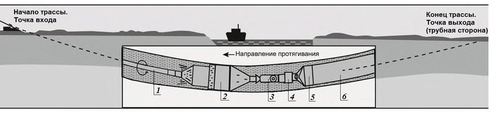
Рисунок А.1 - Принципиальная схема самоходной буровой установки ГНБ
Таблица А.1 - Классификация и основные характеристики буровых установок
| Класс буровой установ- ки | Область применения | Макси- мальная тяговая си- ла, кН | Макси- мальный крутящий момент, кН·м | Масса буровой установ- ки, т | Мак- си- маль- ная длина буре- ния, м | Макси- мальное расшире- ние, мм |
|---|---|---|---|---|---|---|
| Мини | В городских условиях для про- кладки кабельных линий и ПЭ труб диаметром до 250 мм | До 100 | 1 - 10 | до 7 | 250 | 300 |
| Миди | В городских условиях и сельской местности при прокладке трубо- проводов диаметром до 800 мм, при пересечениях транспортных магистралей и небольших водных путей | 100 - 400 | 10 - 30 | 7 - 25 | 750 | 1000 |
| Макси | При прокладке трубопроводов длиной св. 700 м и диаметром до 1250 мм | 400 - 2500 | 30 - 100 | 25 - 60 | 1000 | 1800 |
| Мега | При прокладке магистральных трубопроводов длиной более 1000 м и диаметром до 1800 мм | Более 2500 | Более 100 | Более 60 | 2000 | 2000 |
Примечание - Приведены максимальные технические характеристики оборудования отдельно по длине бурения и возможному расширению. Взаимосвязь между этими параметрами определяется согласно А.2.4 - А.2.6.
А.2.5 Подбор буровой установки для конкретного объекта производится на основании данных по типу, диаметру и длине предполагаемого к прокладке трубопровода, по инженерно-геологическим условиям строительства, с учетом требований по обеспечению необходимых значений усилий тяги и крутящего момента. Для обеспечения протягивания буровая установка должна обеспечивать силу тяги P т, кН, обеспечивающую выполнение условия:
где Р П - расчетное значение необходимого усилия для протягивания трубопровода, кН; k 1 - коэффициент запаса по тяге буровой установки, приведен в таблице А.2.
Таблица А.2
| Коэффициенты запа- са буровой установки | Группа по буримости (приложение И) | Группа по буримости (приложение И) | Группа по буримости (приложение И) |
|---|---|---|---|
| Коэффициенты запа- са буровой установки | I - III | IV - VI | VII и выше |
| k 1 | 1,5 | 2 | 2,5 |
| k 2 | 1,2 | 1,35 | 1,5 |
А.2.6 Крутящий момент и скорость вращения шпинделя обеспечивают мощность, передаваемую от буровой установки через штанги на буровую головку и расширитель.
Примечание - За исключением случаев, когда дополнительная мощность передается на буровой инструмент при использовании забойного двигателя.
Для обеспечения разработки грунта при проходке пилотной скважины и расширении бурового канала буровая установка должна развивать крутящий момент М б, кН·м, не менее
где k 2 - коэффициент запаса по мощности буровой установки, приведен в таблице А.2;
М - наибольшее расчетное значение суммарного крутящего момента для проходки пилотной скважины или расширения канала, кН·м.
А.2.7 Для определения типа и требуемых характеристик буровой установки, в зависимости от вида прокладываемой коммуникации, длины и диаметра необходимого бурового канала, рекомендуется применять результаты, приведенные в таблицах А.1, А.3.
Таблица А.3 - Необходимое минимальное значение силы тяги буровой установки, кН
| Длина проход- ки, м | Диаметр бурового канала * , мм | Диаметр бурового канала * , мм | Диаметр бурового канала * , мм | Диаметр бурового канала * , мм | Диаметр бурового канала * , мм | Диаметр бурового канала * , мм | Диаметр бурового канала * , мм |
|---|---|---|---|---|---|---|---|
| Длина проход- ки, м | До 100 | 100-250 | 250-350 | 350-450 | 450-650 | 650- 850 | Свыше 800 |
| До 50 | 50 | 70 | 70 | 100 | 120 | 200 | 360 |
| 50-100 | 70 | 70 | 100 | 120 | 200 | 360 | 400 |
| 100-150 | 70 | 100 | 120 | 120 | 200 | 400 | 500 |
| 150-250 | 100 | 120 | 200 | 200 | 360 | 400 | 500 |
| 250-400 | 120 | 200 | 200 | 360 | 400 | 500 | 600 |
| 400-600 | 200 | 200 | 360 | 360 | 500 | 500 | 600 |
| 600-800 | 360 | 400 | 450 | 500 | 600 | 700 | 1000 |
| 800-1000 | 400 | 450 | 500 | 600 | 700 | 1000 | 1200 |
| 1000-1200 | 600 | 700 | 800 | 1000 | 1200 | 1500 | 2000 |
| 1200-1400 | 700 | 800 | 1000 | 1200 | 1500 | 2000 | 2500 |
| Св. 1400 | 1000 | 1200 | 1500 | 2000 | 2500 | 3000 | 4000 |
А.3Буровой инструмент
А.3.1 Буровые штанги
- А.3.1.1 Собираемая в процессе бурения колонна буровых штанг должна обеспечивать:
- передачу крутящего момента и осевого давления от буровой установки на скважинный породоразрушающий инструмент;
- перенос бурового раствора к буровому инструменту;
- передачу тягового усилия к расширителю и протягиваемому трубопроводу.
- А.3.1.2 Предел текучести стали для буровых штанг - не менее 525 МПа. Замки штанг (выполняемые, как правило, с конической резьбой по ГОСТ Р 50864) должны обеспечивать их равнопрочное, надежное и простое сборно-разборное соединение. Перед свинчиванием на резьбу и упорные поверхности штанг должна наноситься резьбовая смазка с цинковым (или другим металлическим) наполнителем (например, Резьбол Б).
- А.3.1.3 Для буровых штанг установлены следующие показатели: длина, диаметр и толщина стенки штанги, тип резьбы, допускаемая нагрузка по прочности тяги и крутящему моменту замка, минимальный радиус изгиба. Типовые размеры штанг приведены в таблице
А.4. Таблица А.4
| Диаметр, мм | 60 | 73 | 89 | 102 | 114 | 127 | 140 | 168 |
|---|---|---|---|---|---|---|---|---|
| Длина, м | 2,0-3,0 | 3,0-4,5 | 4,5-6,0 | 5,0-6,0 | 5,0-6,0 | 9,6-10,6 | 9,6-10,6 | Более 10,6 |
А.3.1.4 Тип и размер применяемых буровых штанг должны соответствовать проектным значениям радиуса изгиба, силы тяги и крутящего момента по траектории бурения. Минимальный радиус изгиба буровой штанги принимается по данным производителя и, как правило, находится в интервале от 30 м до 250 м.
А.3.1.5 Буровые штанги подвергаются износу за счет трения, особенно при бурении в твердых породах. Перед началом работ необходимо провести их визуальный осмотр. По результатам осмотра, при необходимости, выполняется выборочный инструментальный контроль (толщинометрия и дефектоскопия буровых штанг) с применением специализированных приборов реализующих ультразвуковые и акустические методы по ГОСТ 17410, ГОСТ 31244. Штанги с нарушением геометрической формы, недопустимым износом и дефектами металла, отбраковываются.
А.3.2 Породоразрушающий инструмент
А.3.2.1 Инструмент для бурения пилотной скважины
Для землистых и мягких грунтов I - IV групп по буримости для механического вращательного бурения (приложение И), должны применяться гидромониторные долота длиной от 300 до 1000 мм и диаметром от 40 до 200 мм. Гидромониторные долота отличаются числом и размерами промывочных насадок. Как правило, применяют не более пяти насадок с раскрывающимся диаметром от 1 до 10 мм. Для регулирования направления бурения управляющая поверхность головки гидромониторного долота либо вся труба долота выполняется со скосом под небольшим углом.
Для грунтов средней крепости IV - VII групп по буримости для механического вращательного бурения (приложение И) применяются шарошечные долота с гидромониторными насадками, которые способны механически разрушать горную породу. Для шарошечного долота рекомендуется применять забойные двигатели.
Для твердых скальных пород VIII и выше групп по буримости для механического вращательного бурения (приложение К) применяеться твердосплавный буровой инструмент.
Передовой бур (пионер) со сменными насадками и буровая лопатка предназначены для проведения универсальных работ по разрушению грунта и регулировке угла бурения.
А.3.2.2 Инструмент для расширения скважины
СП 341.1325800.2017
Для рыхлых и малопрочных грунтов применяются расширители цилиндрического типа с насадками.
Для грунтов средней прочности применяются однозубые фрезы или летучие резцы, состоящие из режущего кольца, соединенного с центральной бурильной трубой через три или более распорки. Насадки могут быть расположены в кольце или в распорках. Плоское долото может также монтироваться на кольце и распорках для механической защиты и выемки грунта.
Для прочных скальных пород применяются раздвижные буровые расширители, состоящие из твердосплавных шарошек, установленных вокруг центральной стабильной бурильной трубы. Струйные насадки, смонтированные на расширителях, очищают шарошки и транспортируют буровой шлам к выходу из скважины.
А.3.2.3 Для обеспечения необходимого расширения скважины следует применять цилиндрические расширители увеличивающегося диаметра, при этом передняя секция последующего расширителя должна быть равна максимальному диаметру предыдущего. Цилиндрические расширители должны быть снабжены стабилизаторами для фиксации и предотвращения качания буровой колонны в скважине во время расширения.
Примечание - Возможно применение расширителей других конструкций.
А.3.2.4 В качестве вспомогательного оборудования буровой колонны, используют переходники и переводники для соединения штанги с буром, римером, вертлюгом. Вертлюг предотвращает скручивание протягиваемого трубопровода.
А.3.2.5 Буровые штанги, амортизатор, буровая головка, расширители и ножи относятся к сменной оснастке (быстроизнашивающиеся части). Срок службы сменной оснастки рекомендуется принимать:
- 1 год - буровых штанг;
- 4 мес. - стартовых штанг (амортизаторов);
- 6 мес. - буровых головок;
- 4 мес. - расширителей;
- 3 мес. - буровых лопаток (насадки).
А.4 Оборудование для приготовления, подачи, очистки и регенерации бурового раствора
А.4.1 В состав оборудования должны входить: поддон (бункер) для складирования компонентов бурового раствора и дополнительных реагентов, смесительная установка, баки для бурового раствора, насос высокого давления, установки очистки и обогащения раствора для его повторного применения. С установками классов Миди и Макси целесообразно применять два бака: для подготовительного рабочего раствора и для перемешивания.
Технологическая схема блока приготовления бурового раствора включает: емкость для перемешивания компонентов бурового раствора, оснащенную гидравлическим и/или механическим перемешивателем; гидроэжекторный смеситель, оснащенный загрузочной воронкой; центробежный насос.
А.4.2 Буровые установки классов Мини и Миди могут укомплектовываться компактными смесителями непрерывного действия. Для обеспечения эффективной работы такого рода смесителей необходимо применять компоненты бурового раствора, не требующие длительного перемешивания и разбухающие в форсунке буровой головки.
А.4.3 Система очистки бурового раствора состоит из набора технологического оборудования, где каждая последующая ступень удаляет выбуренную породу меньшей фракции, чем предыдущая. Степень очистки каждой конкретной ступени зависит от параметров выбранного оборудования и определяется средним размером удаляемых частиц («точка отсечки»):
- до 75 микрон - вибрационное сито;
- до 45 микрон - гидроциклон 10 дюймов (пескоотделитель);
- до 25 микрон - гидроциклон 4 дюйма (илоотделитель);
- до 5 - 10 микрон центрифуга;
- меньше 1 микрона (до состояния технической воды) -блок коагуляции и флокуляции, используемый для утилизации бурового раствора.
А .5 Системы локации
А.5.1 При проходке пилотной скважины должен осуществляться постоянный контроль за положением бурового инструмента с помощью специализированных систем локации, позволяющих отслеживать: глубину бурения, угол наклона трассы к горизонту, крен бурового инструмента (положение скоса буровой лопатки или иного инструмента «по часам»), азимут скважины (при необходимости), отклонение в плане, другие условия и характеристики технологического процесса. Для получения и обработки данных рекомендуется применять сертифицированное программное обеспечение, поставляемое производителем локационной системы или другими производителями.
А.5.2 Переносная локационная система, как правило, состоит из приемника-локатора, удаленного дисплея (повторителя) и, работающего от батарей, излучателя-зонда, помещаемого непосредственно за буровой головкой или в ее корпусе. Типовая схема действия электромагнитной системы подземной локации приведена на рисунке А.2.
Рисунок А.2 - Схема действия электромагнитной системы подземной локации
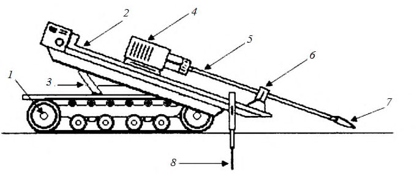
А.5.3 При наличии значительных помех измерениям (см. 8.5.4), снижающих точность электромагнитного способа локации, при проходке скважин большой протяженности (когда может не хватить заряда аккумуляторных батарей), а также в условиях местности, не позволяющих размещать приемник точно над излучателем, целесообразно применять кабельный способ локации. При этом способе данные о положении буровой головки в текущий момент времени от измерительного зонда, размещаемого за буровой головкой, передаются на управляющий компьютер по кабелю, который продевается внутри каждой штанги при проходке пилотной скважины. По этому же кабелю осуществляется электропитание погружного измерительного зонда.
А.5.4 Погрешность прибора для измерений глубины должна быть в пределах 5 %. При работе в зонах с высоким уровнем помех, искажающих результаты измерений глубины, а также при необходимости высокоточных измерений следует вести контроль проходки пилотной скважины по значениям уклона буровой головки. Погрешность измерений продольного уклона для высокоточной прокладки должна быть не более 0,1 % (1 мм по вертикали на 1 м по горизонтали).
Примечание - К объектам, для которых необходимы высокоточные измерения, в первую очередь относятся самотечные водопроводные и канализационные коммуникации.
А .6 Дополнительное оборудование для протягивания трубопровода
А.6.1 В качестве дополнительного оборудования, обеспечивающего проведение работ по протягиванию в сложных инженерно-геологических условиях, а также при большой длине и диаметре прокладываемого трубопровода, могут быть использованы гидравлические доталкиватели труб или усилители тяги.
А.6.2 Доталкиватель труб монтируется в месте выхода скважины и сборки трубопровода. Технология работ с применением доталкивателя на первых этапах не отличается от 8.5 - 8.7: проводится пилотное бурение и выполняется требуемое число предварительных расширений диаметра скважины. На стадии протягивания трубопровода доталкиватель применяется в дополнение к силе тяги буровой установки и должен обеспечивать проталкивающие усилия в направлении буровой установки. За счет использования объединенной мощности установки ГНБ и доталкивателя достигается оптимальное распределение усилий на различных стадиях протяжки.
А.6.3 Усилитель тяги используется как дополнительное навесное оборудование для увеличения тягового усилия на буровых штангах при совместной работе с установкой ГНБ. При этом установка ГНБ должна обеспечивать вращение штанг, расположенных внутри узла зажима установки. Применение усилителей тяги рекомендуется при прокладке труб большого диаметра легкими установкам и при работе в стесненных условиях.
БПриложение Б. Типовая форма задания на проектирование закрытого перехода, сооружаемого методом горизонтального направленного бурения
Задание
на проектирование ЗП по титулу \_\_\_\_\_\_\_\_\_\_\_\_\_\_\_\_\_\_\_\_\_\_\_\_\_\_\_\_\_\_\_\_\_\_\_\_\_\_\_\_\_\_\_\_\_\_\_\_\_
\_\_\_\_\_\_\_\_\_\_\_\_\_\_\_\_\_\_\_\_\_\_\_\_\_\_\_\_\_\_\_\_\_\_\_\_\_\_\_\_\_\_\_\_\_\_\_\_\_\_\_\_\_\_\_\_\_\_\_\_\_\_\_\_\_\_\_\_\_\_\_\_\_\_\_\_\_\_\_\_
(наименование титула линейного объекта)
| Перечень основных требований | Содержание требований |
|---|---|
| 1 Общие данные | 1 Общие данные |
| 1.1 Основание для проектирования линейного объекта | |
| 1.2 Основные технические характеристики линейного объекта (вид инженерной коммуникации, общая протя- женность, материалы трубопроводов) | |
| 1.3 Особые условия строительства линейного объекта (инженерно-топографические характеристики участков строительства) | |
| 1.4 Обоснования для проектирования ЗП ГНБ (техниче- ские условия, протоколы обследования местности, иные требования и согласования заинтересованных сторон) | |
| 1.5 Заказчик | |
| 1.6 Исполнитель | |
| 1.7 Вид строительства (новое строительство, перекладка, реконструкция) | |
| 1.8 Основные технико-экономические показатели ЗП ГНБ | |
| 1.9 Инженерные изыскания - Инженерно-геодезические изыскания - Инженерно-геологические изыскания - Инженерно-гидрометеорологические изыскания - Инженерно-экологические изыскания | |
| 1.10 Указания о выделении очередей строительства и пусковых комплексов, их состав | |
| 1.11 Указания о необходимости разработки вариантов проектных решений | |
| 1.12 Стадийность проектирования | |
| 1.13 Исходно-разрешительная документация, предостав- ляемая Заказчиком | |
| 1.14 Исходные данные, получаемые проектной органи- зацией | |
| 2 Основные требования к проектным решениям | 2 Основные требования к проектным решениям |
| Перечень проектной документации | Требования и объемы проектиро- вания |
| Инженерные изыскания | Инженерные изыскания |
| 2.1 2.2 Технологические и конструктивные решения ЗП ГНБ | |
| 2.3 Проект организации строительства ЗП ГНБ | |
| 2.4 Мероприятия по охране окружающей среды | |
| 3 Дополнительные требования | 3 Дополнительные требования |
| 3.1 Количество экземпляров проектной документации, передаваемой Заказчику |
- 3.2 Необходимость представления проектной документа- ции на электронных носителях
- 3.3 Указания о необходимости согласований проектной документации
- 3.4 Сроки проектирования
- 3.5 Требования по разработке сметной документации
- 3.6 Прочие требования
(подписи ответственных исполнителей)
\_\_\_\_\_\_\_\_\_\_\_\_\_\_\_\_\_\_\_\_\_\_\_\_\_\_\_ \_\_\_\_\_\_\_\_\_\_\_\_\_\_\_\_\_\_\_\_\_\_\_ \_\_\_\_\_\_\_\_\_\_\_\_\_\_\_\_\_\_\_
(должность) (подпись) (инициалы, фамилия)
\_\_\_\_\_\_\_\_\_\_\_\_\_\_\_\_\_\_\_\_\_\_\_\_\_\_\_ \_\_\_\_\_\_\_\_\_\_\_\_\_\_\_\_\_\_\_\_\_\_\_ \_\_\_\_\_\_\_\_\_\_\_\_\_\_\_\_\_\_\_
(должность) (подпись) (инициалы, фамилия)
СП 341.1325800.2017
ВПриложение В. Снижение рисков проблемных технологических и аварийных ситуаций при прокладке коммуникаций методом горизонтального направленного бурения
В.1Виды и классификация рисков
В.1.1 Риски возникновения последующих проблемных аварийных ситуаций ГНБ закладываются еще при проведении инженерных изысканий, проектировании трассы и конструкции трубопровода, проведении подготовительных работ.
В.1.2 При проведении инженерных изысканий возможны:
- недостаточный объем и отсутствие комплексного подхода по 6.1;
- неточности геологических изысканий по 6.3, приводящие к искаженным данным по типам проходимых слоев грунта, их мощности, физико-механическим характеристикам, уровням и режимам подземных вод;
- ошибки топографической съемки и построения инженерно-топографического плана по 6.2;
- неправильное определение положения существующих коммуникаций.
В.1.3 На стадии проектирования из-за неполноты исходных данных и недостаточной проработки проекта возможны риски ошибок:
- в построении трассы перехода по 7.3;
- оценке поверхностных деформаций;
- в определении конструкции перехода по 7.4 - 7.6;
- в подборе буровой установки, штанг, бурового инструмента, характеристик и состава бурового раствора по 9.1.
В.1.4 На стадии строительства из-за непредвиденных геотехнических условий, ошибок проектно-технологических решений, влияния активных и пассивных помех системы локации, нарушений в технологии производства работ по разделу 8, возможен риск возникновения технологических проблем и аварийных ситуаций, включая:
- потерю бурового инструмента;
- отклонения от проектной трассы бурения;
- обрушение скважины;
- просадки или подъем поверхности;
- выход бурового раствора на поверхность, в водоем, в подземные сооружения и коммуникации по трассе бурения вследствие избыточного давления подачи раствора, недостаточной глубины покрытия;
- загрязнение грунтовых вод химическими и полимерными добавками к буровым растворам (кальцинированная сода, полимеры, активные и моющие вещества);
- загрязнение природной (городской) среды отработанным раствором и шламом в местах расположения строительных площадок;
- повреждения трубопровода из-за превышения предельно-допустимого значения усилия протяжки по прочности трубы;
- повреждения защитного покрытия труб;
- недостаточность усилия тяги буровой установки;
- заклинивание трубопровода при протягивании.
Основные проблемные или аварийные ситуации, их причины и последствия приведены в таблице В.1.
В.2Снижение рисков
- В.2.1 Для предотвращения или снижения рисков возникновения технологических проблем и аварийных ситуаций со стороны организации-производителя работ по ГНБ требуется:
- анализ результатов инженерных изысканий и проектной документации, при необходимости, проведение экспертизы и корректировки проекта в части построения оптимальной трассы бурения, включая углы входа и выхода, радиусы изгиба, заглубление, длины участков и др.;
- применение надежного оборудования и технологии, соответствующей инженерногеологическим условиям;
- контроль неукоснительного выполнения требований нормативных документов;
- входной контроль материалов и изделий;
- применение эффективных буровых растворов в объемах, достаточных для пилотного бурения, расширения скважины и протягивания трубопровода с учетом раздела 9;
- своевременное и оперативное реагирование на изменения инженерных и гидрогеологических условий проходки, включая корректировку состава бурового раствора и технологии бурения, проведение дополнительных мероприятий по обеспечению производства работ (см. 8.4), применение вспомогательного оборудования и др.;
- операционный контроль выполнения работ в соответствии с 11.3;
- не допускать перерыва между последовательным расширением бурового канала и протягиванием трубопровода, а также в процессе протягивания;
Таблица В.1 - Проблемные и аварийные ситуации
Примечание - При аварийной ситуации буровой инструмент, вся скважинная сборка или часть трубопровода могут быть потеряны. Извлечь оставленное в скважине оборудование в большинстве случаев технически возможно, однако следует сопоставить стоимость и трудоемкость этих работ, связанных чаще всего с раскопками поверхности, со стоимостью оставленного оборудования.
| Характеристика проблемной или аварийной ситуации | Возможные причины | Возможные последствия |
|---|---|---|
| Потери бурового раствора, нарушение его циркуляции | Проницаемые и /или трещиноватые породы вдоль трассы бурения; слоистость и разломы пород; чрезмерное давление подачи бурового раствора; недопустимые отклонения траектории бурения; превышение скорости проходки | Поглощение бурового раствора, различные по объему выходы на поверхность, попа- дание в подземные сооружения и комму- никации |
| Фильтрация бурового раство- ра непосредственно в водоток | Проницаемые и /или трещиноватые породы вдоль трассы бурения; слоистость и разломы пород; чрезмерное давление подачи бурового раствора; недопустимые отклонения траектории бурения | Мутность воды и донные отложения с воз- можными отрицательными последствиями для водоема, рыбы и водопользователей ниже по течению |
| Обрушение скважины, размыв грунтовых полостей по трассе бурения | Несоответствие технологии производства работ инженерно и гидрогеологическим условиям; оползневые процессы; эрозия или осадки грунта | Осадки поверхности, смещения зданий и сооружений |
| Остановка бура, застрявшая буровая колонна | Обрушение скважины вдоль трассы бурения; наличие набухающей высокопластичной глины, валунов, бентонитовых сланцев, угольных пластов и др.; деформация/поломка бурового инструмента | Проведение земляных работ для извлече- ния оборудования. Вероятны осадки грун- та |
| Застрявший при протягивании трубопровод (расширитель) | Обрушение скважины вдоль трассы бурения, деформация/поломка бурового инструмента; недостаточное расширение ствола; повреждение/разрыв стыка труб; недостаточная мощность буровой установки; возникновение «гидрозамка» | Вероятны осадки, бурение новой скважины |
| Поврежденная труба или за- щитное покрытие | Недостаточное расширение ствола; обрушение скважины вдоль трассы бурения; отсутствие/недостаточность/неисправность роликовых опор или направляющих на площадке трубной стороны; чрезмерно крутой угол входа или выхода; недостаточный радиус изгиба плети трубопровода; превышение значения предельно допустимого усилия протягивания по прочности трубы; валуны, гравий, искусственные включения; обсадная труба в скважине | Прокладка нового перехода |
- привлекать к проведению работ квалифицированный персонал, прошедший специальное обучение;
- предусматривать дополнительные технологические мероприятия по предотвращению аварийных ситуаций (по 8.4) в сложных инженерно-геологических условиях;
- рассматривать вероятность устройства резервного перехода и наметить его возможное местоположение.
Примечание - Наилучшим вариантом является участие организации-производителя работ по ГНБ в разработке проекта ЗП.
В.2.2 Для каждого типа грунта необходимо применять определенные ППР технологические параметры бурения (см. 8.2.3). Рекомендации по выбору технологических параметров бурения приведены в 8.5 и таблице 8.2 .
В.2.3 При расширении бурового канала и протягивании трубопровода возможен риск возникновения перед расширителем «гидрозамка» , превышающего мощность тяги буровой установки и возникающего из-за потери циркуляции. Для обеспечения циркуляции и снижения риска возникновения «гидрозамка» необходимо:
- при бурении, расширении и протяжке подавать в скважину достаточное количество бурового раствора, не допуская перерывов, в соответствии с разделом 9;
- ограничивать скорости проходки при бурении пилотной скважины, расширении и протягивании трубопровода в соответствии с 8.5.8 - 8.5.11, 8.6.8, 8.6.9;
- использовать расширители, соответствующие гидрогеологическим условиям проходки по А.3 (приложение А);
- при невозможности дальнейшей протяжки, извлечь расширитель и выполнить повторное бурение пилотной скважины.
\_\_\_\_\_\_\_\_\_
Гидравлического сопротивления.
Приложение Г
Состав, наименования и последовательность размещения текстовых и графических документов в комплекте проекта закрытого перехода
Таблица Г.1
| Наименование и последовательность размещения документов в комплекте проекта ЗП | Шифр документа | Проектная документация | Рабочая документация |
|---|---|---|---|
| Текстовые документы | Текстовые документы | Текстовые документы | Текстовые документы |
| 1 Титульный лист | - | + | + |
| 2 Содержание | С | + | + |
| 3 Состав проекта | СП | + | + |
| 4 Ведомость согласований | ВС | + | + |
| 5 Пояснительная записка | ПЗ | + | + (при необходимо- сти) |
| 6 Заключение об инженерно- геологических условиях строительства | ГЗ | + (при необходимо- сти) | + (при необходимо- сти) |
| 7 Технические условия | - | + | + |
| 8 Тексты согласований | - | + | + |
| 9 Письма, протоколы и другая докумен- тация (при необходимости) | - | + | + |
| 10 Ведомости объемов работ | ВР | + | + |
| Графические документы | Графические документы | Графические документы | Графические документы |
| 11 План ЗП | - | + | + |
| 12 Продольный профиль. Конструктив- ное сечение ЗП | - | + (при необходимо- сти) | + |
Обозначения:
«+» - должен быть;
«-» - отсутствует.
Примечания
1 Необходимость заключения об инженерно-геологических условиях, определяется в задании на проектирование.
2 В случае отсутствия чертежа продольного профиля (при разработке стадии «П») конструктивное сечение ЗП показывается на плане ЗП.
- 3 В составе ведомости объемов работ ВР учитываются длины бурения входных-выходных участков по 7.3.1.6 (при их наличии), а также разработка необходимых шурфов, траншей и котлованов.
Таблица Г.2 - Состав пояснительной записки к проекту ЗП
| Номер раздела | Состав пояснительной записки |
|---|---|
| 1 | Общие сведения |
| 2 | Характеристика района строительства |
| 2.1 | Условия строительства |
| 2.2 | Сведения об инженерно-геологических условиях строительства |
| 3 | Технические и конструктивные решения, включая конструкцию и размеры секций сборного трубопровода, антикоррозионное и защитное покрытие (при необходи- мости) |
| 4 | Мероприятия по охране окружающей среды |
| 5 | Технологические решения по строительству закрытых переходов |
| 5.1 | Основные способы работ и выбор строительных механизмов |
| 5.2 | Продолжительность строительства и сведения о числе работающих |
| 5.3 | Основные виды строительных и монтажных работ, конструкций, подлежащих освидетельствованию |
| 5.4 | Геодезические работы |
| 5.5 | Особенности строительства ЗП при пересечении с железнодорожными путями, автомобильными дорогами, метрополитенами, существующими коммуникациями, водными преградами и т.п. |
| 5.6 | Контроль качества выполняемых работ |
ДПриложение Д. Составы типовых комплексов оборудования и производственной бригады
Д.1 Рекомендуемые составы типовых комплексов основного и дополнительного оборудования, а также технического и инфраструктурного оснащения в зависимости от класса применяемой буровой установки ГНБ приведены в таблице Д.1
Таблица Д.1 - Рекомендуемый состав оборудования комплекса, элементы технического и инфраструктурного оснащения, необходимые для производства работ по технологии ГНБ
| Наименование оборудования | Число единиц оборудования для буровой установки ГНБ класса | Число единиц оборудования для буровой установки ГНБ класса | Число единиц оборудования для буровой установки ГНБ класса | Число единиц оборудования для буровой установки ГНБ класса |
|---|---|---|---|---|
| Мини | Миди | Макси | Мега | |
| Установка ГНБ в комплекте с буровым ин- струментом и контрольной локационной си- стемой | 1 | 1 | 1 | 1 |
| Установка для приготовления и подачи буро- вого раствора (растворный узел) | 1 | 1 | 1-2 | 1-2 |
| Полевой набор приборов для подбора и кон- троля состава бурового раствора | Один ком- плект | Один ком- плект | Один комплект | Один комплект |
| Установка для регенерации бурового раствора | - | 1 | 1 | 1 |
| Специальный транспорт для подвоза воды | 1 | 1-2 | 4-8 | 5-10 |
| Специальный транспорт для вакуумной экска- вации и перевозки бурового шлама (илососные машины) | 1 | 2-4 | 4-8 | 5-10 |
| Грузовой трейлер для транспортирования установки ГНБ и основного оборудования | 1 | 1-2 | 2-5 | 5-10 |
| Грузовой автотранспорт для перевозки допол- нительного оборудования и элементов техни- ческого оснащения, бентонита и полимеров | 2 | 2 | 10-15 | 15-25 |
| Бытовое помещение с биотуалетом | 1 | 1 | 1-2 | 1 |
| Контейнер-мастерская (укомплектованный слесарным и электроинструментом, бензопи- лой, шанцевым инструментом, комплектами запасных частей и расходных материалов и т.п.) | 1 | 1 | 1 | 1-2 |
| Автокран либо кран-манипулятор | 1 | 1 | 2 | 3 |
| Экскаватор | 1 | 1 | 2 | 2 |
| Бульдозер | 1 | 1 | 2 | 2 |
| Передвижная дизельная электростанция мощ- ностью 16кВт и более | 1 | 1 | 1-2 | 3 |
| Передвижная электростанция мощностью до 16кВт | 1 | 1 | 1 | 1 |
| Электро- и газосварочное оборудование | По од- ному ком- плекту | По од- ному ком- плекту | По одно- му ком- плекту | По одно- му ком- плекту |
| Оборудование для стыковой и муфтовой свар- | По од- | По од- | По одно- | По одно- |
| ки полимерных трубопроводов | ному ком- плекту | ному ком- плекту | му ком- плекту | му ком- плекту |
|---|---|---|---|---|
| Гидравлические ключи | один ком- плект | один ком- плект | один комплект | один комплект |
| Водяной насос | 1шт. | 1шт. | 2шт. | 2шт. |
| Шламовый насос | 1шт. | 1шт. | 2шт. | 2шт. |
Д.2 Рекомендуемый типовой состав бригады для производства работ по прокладке инженерных коммуникаций методом ГНБ, в зависимости от класса применяемой буровой установки, приведен в таблице Д.2.
Таблица Д.2 - Состав бригады ГНБ
| Наименование специалистов | Число специалистов, чел., для работ на бу- ровой установке класса | Число специалистов, чел., для работ на бу- ровой установке класса | Число специалистов, чел., для работ на бу- ровой установке класса | Число специалистов, чел., для работ на бу- ровой установке класса |
|---|---|---|---|---|
| Мини | Миди | Макси | Мега | |
| Начальник бурового комплекса | 1 | 1 | 1 | 1 |
| Производитель работ- сменный мастер | 1 | 2 | 3 | 3 |
| Геодезист | 1 | 1 | 1 | 1 |
| Специалист по подбору и контролю состава бурового раствора | 1 | 2 | 3 | 3 |
| Оператор установки ГНБ | 1 | 2 | 3 | 3 |
| Оператор растворо-смесительного узла | 1 | 2 | 3 | 3 |
| Оператор локатора | 1 | 2 | 3 | 3 |
| Водитель водовозной машины | 1 | 1-2 | 2-4 | 2-5 |
| Водитель-оператор илососной машины | 1 | 2-4 | 4-8 | 5-10 |
| Оператор установки для регенерации бурового раствора | - | 1 | 3 | 3 |
| Крановщик | - | 1 | 3 | 3 |
| Экскаваторщик | 1 | 1 | 3 | 3 |
| Бульдозерист | - | 1 | 3 | 3 |
| Разнорабочий | 1-2 | 2-3 | 4-6 | 6-12 |
| Водитель грузового автотранспорта, в т.ч. с правом управления автомобилем с прицепом | 1 | 2 | 4-9 | 10-18 |
ЕПриложение Е. Типовые характеристики защитного композитного покрытия
Е.1 ЗКП предназначено для защиты антикоррозионного, теплоизоляционного, гидроизоляционного покрытия труб, а также самих труб от механических повреждений при их транспортировании, а также прокладке и эксплуатации различных видов инженерных коммуникаций. ЗКП предотвращает всплытие трубы за счет ее утяжеления.
Е.2 ЗКП может быть применено для стальных, чугунных, полимерных и композитных труб наружным диаметром от 100 до 2000 мм, соответствующих проектно-техническим требованиям для прокладки ЗП.
Е.3 Состав и технические характеристики ЗКП приведены в таблице Е.1. ТаблицаЕ.1
| Наименование характеристики | Наименование характеристики | Значение |
|---|---|---|
| 1 | Состав покрытия | Цементно-полимерно-песчаная смесь в оболочке |
| 2 | Армирование покрытия | Полиэтиленовая фибра, арматурный каркас |
| 3 | Толщина одного слоя по- крытия, мм | 15 - 130 |
| 4 | Плотность покрытия, кг/м³ | 1900 - 3400 |
| 5 | Предел прочности материа- ла покрытия при сжатии, МПа | Не менее 40 |
| 6 | Допускаемый радиус изгиба трубы с покрытием, м | Не менее 1200 d н |
| 7 | Водопоглощение материала покрытия, %по массе | Не более5% |
| 8 | Морозостойкость по ГОСТ 10060 | Не менее F100 |
| 9 | Тип оболочки | Стальная, стальная оцинкованная, ста- леполимерная, полимерная |
| 10 | Сплошность покрытия | Полное заполнение пространства между трубой и оболочкой |
Е.4 Конструкция труб с ЗКП приведена на рисунке Е.1. ЗКП охватывает трубопровод по всей наружной поверхности за исключением концов труб длиной a1 от 250 до 500 мм. Концы изолируются при сборке трубопровода.
Е.5 Трубы поставляются с ЗКП, нанесенным в заводских условиях. Совместно с трубами должны поставляться комплекты материалов для защиты сварных соединений, предна-
Рисунок Е.1 - Конструкция трубы с ЗКП
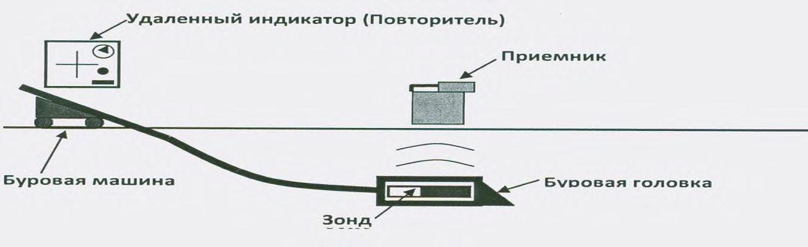
значенные для установки на участки, прилегающие к кольцевому сварному соединению, на которые не нанесено ЗКП.
Е.6 Типовые значения погонной массы ЗКП для труб различных диаметров представлены в таблице Е.2. При производстве труб с ЗКП, по требованию потребителя, могут подбираться различные значения толщины и плотности покрытия.
Таблица Е.2 -Типовые значения погонной массы ЗКП
| Наружный диаметр по- крываемой трубы, мм | Масса 1 пог.м покрытия, кг | Наружный диаметр по- крываемой трубы, мм | Масса 1 пог.м по- крытия, кг |
|---|---|---|---|
| 159 | 22 | 530 | 79 |
| 219 | 31 | 720 | 105 |
| 273 | 40 | 820 | 111 |
| 325 | 50 | 1020 | 134 |
| 377 | 58 | 1220 | 170 |
| 426 | 66 | 1420 | 201 |
Для труб диаметром более 1420 мм, масса 1 пог. м покрытия определяется по данным производителя.
Е.7 Областями эффективного применения ЗКП при прокладке подземных трубопроводов методом ГНБ являются:
- горная местность;
- сложные геологические условия (скальные, обломочные, щебеночные и галечные грунты), в том числе в сейсмических зонах, требующие предотвращения повреждений поверхности трубопроводов, изоляционных и теплогидроизоляционных покрытий трубопроводов;
- подводные переходы, обводненная и заболоченная местность;
- мерзлые грунты по ГОСТ 25100;
- переходы под железными и автомобильными дорогами;
- зоны пересечения и сверхнормативного сближения со зданиями и сооружениями повышенного и нормального уровней ответственности, коммуникациями.
ЖПриложение Ж. Допуски по усилиям протягивания полиэтиленовых труб
Таблица Ж.1 - Допустимые усилия протягивания, кН, полиэтиленовых труб из ПЭ 80 и ПЭ 100 по ГОСТ 18599
| Средний наружный диаметр трубы, мм | Размерное отношение наружного диаметра к толщине стенки | Размерное отношение наружного диаметра к толщине стенки | Размерное отношение наружного диаметра к толщине стенки | Размерное отношение наружного диаметра к толщине стенки | Размерное отношение наружного диаметра к толщине стенки | Размерное отношение наружного диаметра к толщине стенки | Размерное отношение наружного диаметра к толщине стенки | Размерное отношение наружного диаметра к толщине стенки |
|---|---|---|---|---|---|---|---|---|
| Средний наружный диаметр трубы, мм | 17 | 17 | 13,6 | 13,6 | 11 | 11 | 9 | 9 |
| Средний наружный диаметр трубы, мм | ПЭ 80 | ПЭ 100 | ПЭ 80 | ПЭ 100 | ПЭ 80 | ПЭ 100 | ПЭ 80 | ПЭ 100 |
| 40 | 2,5 | 3,2 | 2,5 | 3,2 | 3,3 | 4,2 | 4,2 | 5,3 |
| 50 | 3,3 | 4,2 | 4,2 | 5,3 | 5,8 | 7,4 | 6,7 | 8,4 |
| 63 | 5,8 | 7,4 | 7,5 | 9,5 | 8,4 | 10,5 | 10,9 | 13,7 |
| 90 | 11,7 | 14,7 | 15,0 | 18,9 | 17,5 | 22,1 | 20,9 | 26,3 |
| 110 | 18,4 | 23,1 | 21,7 | 27,3 | 26,7 | 33,6 | 31,7 | 39,9 |
| 125 | 22,5 | 28,4 | 28,4 | 35,7 | 34,2 | 43,1 | 40,9 | 51,5 |
| 140 | 28,4 | 35,7 | 35,1 | 44,1 | 42,6 | 53,6 | 50,9 | 64,1 |
| 160 | 37,6 | 47,3 | 45,9 | 57,8 | 55,9 | 70,4 | 66,8 | 84,0 |
| 180 | 47,6 | 59,9 | 58,5 | 73,5 | 70,1 | 88,2 | 91,0 | 114,5 |
| 200 | 58,5 | 73,5 | 71,8 | 90,3 | 86,8 | 109,2 | 104,4 | 131,3 |
| 225 | 74,3 | 93,5 | 91,0 | 114,5 | 110,2 | 138,6 | 131,9 | 165,9 |
| 250 | 91,0 | 114,5 | 111,9 | 140,7 | 135,3 | 170,1 | 162,8 | 204,8 |
| 280 | 114,4 | 143,9 | 140,3 | 176,4 | 169,5 | 213,2 | 204,6 | 257,3 |
| 315 | 145,3 | 182,7 | 177,9 | 223,7 | 214,6 | 269,9 | 258,9 | 325,5 |
| 355 | 184,5 | 232,1 | 225,5 | 283,5 | 272,2 | 342,3 | 328,2 | 412,7 |
| 400 | 233,8 | 294,0 | 285,6 | 359,1 | 346,5 | 435,8 | 416,7 | 524,0 |
| 450 | 296,4 | 372,8 | 361,6 | 454,7 | 438,4 | 551,3 | 526,9 | 662,6 |
| 500 | 116,1 | 146,0 | 446,7 | 561,8 | 541,1 | 680,4 | 649,6 | 816,9 |
| 560 | 458,4 | 576,5 | 560,3 | 704,6 | 678,0 | 852,6 | 815,0 | 1024,8 |
| 630 | 581,2 | 730,8 | 708,9 | 891,5 | 859,2 | 1080,5 | 1031,2 | 1296,8 |
| 710 | 737,3 | 927,2 | 900,1 | 1131,9 | 1091,3 | 1372,4 | - | - |
| 800 | 935,2 | 1176,0 | 1142,3 | 1436,4 | 1384,4 | 1740,9 | - | - |
| 900 | 1183,2 | 1487,9 | 1445,4 | 1817,6 | - | - | - | - |
| 1000 | 1462,9 | 1839,6 | 1785,2 | 2244,9 | - | - | - | - |
| 1200 | 2104,2 | 2646,0 | - | - | - | - | - | - |
ИПриложение И. Классификация грунтов для механического вращательного бурения скважины
Таблица И.1
| Группа грунта | Наименование и характеристика грунта |
|---|---|
| I | Торф и растительный слой без корней; рыхлые лесс, пески (не плывуны), супеси без гальки и щебня; ил влажный и иловатые грунты; суглинки лессовидные; трепел: мел сла- бый |
| II | Торф и растительный слой с корнями или с небольшой примесью мелкой (до 3 см) гальки и щебня; супеси и суглинки с примесью до 20% мелкой (до 3 см) гальки или щебня; пес- ки плотные; суглинок плотный; лесс; мергель рыхлый; плывун без напора; лед; глины средней плотности (ленточные и пластичные); мел; диатомит; сажи; каменная соль (га- лит); нацело каолинизированные продукты выветривания изверженных и метаморфизо- ванных пород; железная руда охристая |
| III | Суглинки и супеси с примесью свыше 20% мелкой (до 3 см) гальки или щебня; лесс плотный; дресва; плывун напорный; глины с частыми прослоями (до 5 см) слабосцемен- тированных песчаников и мергелей, плотные, мергелистые, загипсованные, песчанистые; алевролиты глинистые слабосцементированные; песчаники, слабосцементированные глинистым и иэвестковистым цементом; мергель; известняк-ракушечник; мел плотный; магнезит; гипс тонкокристаллический, выветрелый; каменный уголь слабый; бурый уголь; сланцы тальковые, разрушенные всех разновидностей; марганцевая руда; железная руда окисленная, рыхлая; бокситы глинистые |
| IV | Галечник, состоящий из мелких галек осадочных пород; мерзлые водоносные пески, ил, торф; алевролиты плотные глинистые; песчаники глинистые; мергель плотный; неплот- ные известняки и доломиты; магнезит плотный; пористые известняки, туфы; опоки гли- нистые; гипс кристаллический; ангидрит; калийные соли; каменный уголь средней твер- дости; бурый уголь крепкий; каолин (первичный); сланцы глинистые, песчано- глинистые, горючие, углистые, алевролитовые; серпентиниты (змеевики) сильновыветре- лые и оталькованные; неплотные скарны хлоритового и амфибол-слюдистого состава; апатит кристаллический; сильновыветрелые дуниты, перидотиты; кимберлиты, затрону- тые выветриванием; мартитовые и им подобные руды, сильновыветрелые; железная руда мягкая вязкая; бокситы |
| V | Галечно-щебенистые грунты; галечник мерзлый, связанный глинистым или песчано- глинистым материалом с ледяными прослойками; мерзлые: песок крупнозернистый и дресва, ил плотный, глины песчанистые, песчаники на известковистом и железистом це- менте; алевролиты; аргиллиты; глины аргиллитоподобные, весьма плотные, плотные сильнопесчанистые; конгломерат осадочных пород на песчано-глинистом или другом пористом цементе; известняки; мрамор; доломиты мергелистые; ангидрит весьма плот- ный; опоки пористые выветрелые; каменный уголь твердый; антрацит, фосфориты жел- ваковые; сланцы глинисто-слюдяные, слюдяные, тальково-хлоритовые, хлоритовые, хло- рито-глинистые, серицитовые; серпентиниты (змеевики); выветрелые альбитофиры, ке- ратофиры; туфы серпентинизированные вулканические; дуниты, затронутые выветрива- нием; кимберлиты брекчиевидные; мартитовые и им подобные руды, неплотные |
| VI | Ангидриты плотные, загрязненные туфогенным материалом; глины плотные мерзлые; глины плотные с прослоями доломита и сидеритов; конгломерат осадочных пород на из- вестковистом цементе; песчаники полевошпатовые, кварцево-известковистые; алевроли- ты с включением кварца; известняки плотные доломитизированные, скарнированные; доломиты плотные; опоки; сланцы глинистые, кварцево-серицитовые, кварцево- слюдяные, кварцево-хлоритовые, кварцево-хлорито-серицитовые, кровельные; хлорити- зированные и рассланцованные альбитофиры, кератофиры, порфириты; габбро; аргилли- ты, слабоокремненные; дуниты, не затронутые выветриванием; перидотиты, затронутые выветриванием; амфиболиты; пироксениты крупнокристаллические; тальково- карбонатные породы; апатиты, скарны эпидото-кальцитовые; колчедан сыпучий; бурые железняки ноздреватые; гематито-мартитовые руды; сидериты |
| VII | Аргиллиты окремненные; галечник изверженных и метаморфических пород (речник); щебень мелкий без валунов; конгломераты с галькой (до 50%) изверженных пород на песчано-глинистом цементе; конгломераты осадочных пород на кремнистом цементе; песчаники кварцевые; доломиты весьма плотные; окварцованные полевошпатовые пес- чаники, известняки; каолин агальматолитовый; опоки крепкие плотные; фосфоритовая плита; сланцы слабоокремненные; амфибол-магнетитовые, куммингтонитовые, рогово- обманковые, хлорито-роговообманковые; слаборассланцованные альбитофиры, керато- фиры, порфиры, порфириты, диабазовые туфы; затронутые выветриванием: порфиры, порфириты; крупно- и среднезернистые, затронутые выветриванием граниты, сиениты, диориты, габбро и другие изверженные породы; пироксениты, пироксениты рудные; кимберлиты базальтовидные; скарны кальцитосодержащие авгито-гранатовые; кварцы пористые (трещиноватые, ноздреватые, охристые); бурые железняки ноздреватые пори- стые; хромиты; сульфидные руды; мартито-сидеритовые и гематитовые руды; амфибол- магнетитовые руды |
|---|---|
| VIII | Аргиллиты кремнистые; конгломераты изверженных пород на известковистом цементе; доломиты окварцованные; окремненные известняки и доломиты; фосфориты плотные пластовые; сланцы окремненные: кварцево-хлоритовые, кварцево-сери-цитовые, кварце- во-хлорито-эпидотовые, слюдяные; гнейсы; среднезернистые альбитофиры и кератофи- ры; базальты выветрелые; диабазы; порфиры и порфириты; андезиты; диориты, не затро- нутые выветриванием; лабрадориты; перидотиты; мелкозернистые, затронутые выветри- ванием граниты, сиениты, габбро; затронутые выветриванием гранито-гнейсы, пегмати- ты, кварцево-турмалиновые породы; скарны крупно- и среднезернистые кристаллические авгито-гранатовые, авгито-эпидотовые; эпидозиты; кварцево-карбонатные и кварцево- баритовые породы; бурые железняки пористые; гидрогематитовые руды плотные; квар- циты гематитовые, магнетитовые; колчедан плотный; бокситы диаспоровые |
| IX | Базальты, не затронутые выветриванием; конгломераты изверженных пород на кремни- стом цементе; известняки карстовые; кремнистые песчаники, известняки; доломиты кремнистые; фосфориты пластовые окремненные; сланцы кремнистые; кварциты магне- титовые и гематитовые тонкополосчатые, плотные мартито-магнетитовые; роговики ам- фибол-магнетитовые и сирицитизированные; альбитофиры и кератофиры; трахиты; пор- фиры окварцованные; диабазы тонкокристаллические; туфы окремненные; ороговико- ванные; затронутые выветриванием липариты, микрограннты; крупно- и среднезерни- стые граниты, гранито-гнейсы, гранодиориты; сиениты; габбро-нориты; пегматиты; бере- зиты; скарны мелкокристаллические авгито-эпидото-гранатовые; датолито-гранато- геденбергитовые; скарны крупнозернистые, гранатовые; окварцованные амфиболит, кол- чедан; кварцево-турмалиновые породы, не затронутые выветриванием; бурые железняки плотные; кварцы со значительным количеством колчедана; бариты плотные |
| X | Валунно-галечные отложения изверженных и метаморфизованных пород; песчаники кварцевые сливные; джеспилиты; затронутые выветриванием, фосфатно-кремнистые по- роды; кварциты неравномернозернистые; роговики с вкрапленностью сульфидов; кварце- вые альбитофиры и кератофиры; липариты; мелкозернистые граниты, гранито-гнейсы и гранодиориты; микрограниты; пегматиты плотные, сильно кварцевые; скарны мелкозер- нистые гранатовые, датолито-гранатовые; магнетитовые и мартитовые руды, плотные, с прослойками роговиков; бурые железняки окремненные; кварц жильный; порфириты сильно окварцованные и ороговикованные |
| XI | Альбитофиры тонкозернистые, ороговикованные; джеспилиты, не затронутые выветри- ванием; сланцы яшмовидные кремнистые; кварциты; роговики железистые, очень твер- дые; кварц плотный; корундовые породы; джеспилиты гематито-мартитовые и гематито- магнетитовые |
| XII | Совершенно не затронутые выветриванием монолито-сливные джеспилиты, кремень, яшмы, роговики, кварциты, эгириновые и корундовые породы |
КПриложение К. Формы исполнительной документации
- 1 Форма протокола бурения скважины
Протокол бурения скважины методом горизонтального направленного бурения
(заполняется на каждую скважину)
Наименование строительной орга- низации, юридический и почтовый адреса, контактные телефоны
Объект
(наименование, шифр)
Адрес производства работ
(уточненное географическое месторасположение в конкретном регионе, населенный пункт, улица, номера строений в непосред- ственной близости)
Наименование перехода методом ГНБ
(текстовое наименование, пикеты, литерные обозначения, нуме- рация или обозначения скважины)
Вид прокладываемой методом ГНБ коммуникации (наименование коммуникации, обозначения технических харак- теристик трубопровода(ов) по НД, их число в скважине)
Фирма-производитель и наименование установки ГНБ
Длина одной буровой штанги, м
Система локации, тип зонда
Должность, инициалы, фамилия лица, ответственного за составление протоко- ла бурения
Должность, инициалы, фамилия руко- водителя буровых работ
Таблица 1
| Длина пилотной скважины, м | Угол наклона бу- ровой головки,% | Глубина нахож- дения буровой головки, см | Примечание (фиксирование ориентиров по профилю бурения) |
|---|---|---|---|
| 1 | |||
| 2 | |||
| 3 | |||
| 4 | |||
| 5 | |||
| 6 | |||
| 7 | |||
| 8 | |||
| 9 |
Окончание таблицы 1
| Длина пилотной скважины, м | Угол наклона бу- ровой головки,% | Глубина нахож- дения буровой головки, см | Примечание (фиксирование ориентиров по профилю бурения) |
|---|---|---|---|
| 10 | |||
| 11 | |||
| 12 | |||
| 13 | |||
| 14 | |||
| 15 | |||
| 16 | |||
| 17 | |||
| 18 | |||
| 19 | |||
| 20 | |||
| 21 | |||
| 22 | |||
| 23 | |||
| 24 | |||
| 25 | |||
| 26 | |||
| 27 |
Примечания
- 1 Номера (1 - 50), как правило, соответствуют номерам штанг. Допускается определение характеристик с увеличенной частотой.
- 2 Ориентирами по профилю бурения должны служить стенки рабочего и приемного котлованов, существующие инженерные коммуникации, края дорожного полотна, урезы воды, наземные и подземные объекты инфраструктуры. Их краткие обозначения в протоколе бурения скважины дают возможность четкой корреляции с плановым положением створа прокладываемого (ых) впоследствии трубопровода (ов).
- 3 В случае, если число штанг (точек фиксирования положения буровой головки по профилю бурения) больше 50, необходимо дополнить таблицу до требуемого числа без изменения общей структуры протокола бурения скважины методом ГНБ.
Характеристики скважины:
Число расширений пи- лотной скважины
\_\_\_\_\_\_\_\_\_\_\_\_\_
Координаты точки входа
\_\_\_\_\_\_\_\_\_\_\_\_\_\_\_\_
Диаметр окончательного расширения, мм
\_\_\_\_\_\_\_\_\_\_\_\_\_
Координаты точки выхода
\_\_\_\_\_\_\_\_\_\_\_\_\_\_\_\_
Длина проложенного(ых) в скважину трубопрово- да(ов), м
\_\_\_\_\_\_\_\_\_\_\_\_\_
Дата начала работ - дата окон- чания работ
\_\_\_\_\_\_\_\_\_\_\_\_\_\_\_\_
Подпись лица, ответственного за составление протокола бурения
Подпись руководителя буровых работ
М.П.
- 2 Форма акта приемки пилотной скважины
Строительство (ремонт) \_\_\_\_\_\_\_\_\_\_\_\_\_\_\_\_
\_\_\_\_\_\_\_\_\_\_\_\_\_\_\_\_
Объект \_\_\_\_\_\_\_\_\_\_\_\_\_\_\_\_
\_\_\_\_\_\_\_\_\_\_\_\_\_\_\_\_
АКТ №\_\_\_\_\_\_ приемки пилотной скважины
\_\_\_\_\_\_\_\_\_\_\_\_\_\_\_\_\_
(основной, резервной) нитки подводного перехода
«\_\_\_» \_\_\_\_\_\_\_\_\_\_\_\_ 20\_\_г.
Составлен представителями: подрядчика\_\_\_\_\_\_\_\_\_\_\_\_\_\_\_\_\_\_\_\_\_\_\_\_\_\_\_\_\_\_\_\_\_\_\_\_\_\_\_\_\_\_\_\_\_\_\_\_\_\_\_\_\_\_\_\_, технического надзора заказчика* \_\_\_\_\_\_\_\_\_\_\_\_\_\_\_\_\_\_\_\_\_\_\_\_\_\_\_\_\_\_\_\_\_\_\_\_\_, заказчика\_\_\_\_\_\_\_\_\_\_\_\_\_\_\_\_\_\_\_\_\_\_\_\_\_\_\_\_\_\_\_\_\_\_\_\_\_\_\_\_\_\_\_\_\_\_\_\_\_\_\_\_\_\_\_\_\_\_ (должность, организация, инициалы, фамилия) (должность, организация, инициалы, фамилия) (должность, организация, инициалы, фамилия) в том, что проведенными промерами фактического положения пилотной скважины и контро- лем углов наклона и азимута во время бурения установлено: пилотная скважина на участке от ПК/км \_\_\_\_\_\_\_\_ до ПК/км \_\_\_\_\_\_\_\_ выполнена в соответ- ствии с проектной документацией, чертеж № \_\_\_\_\_\_\_\_, принята и считается готовой для производства работ по расширению пилотной скважины.
Ведомость проектных и фактических отметок пилотной скважины по оси подводного перехода прилагается.
Представитель подрядчика
\_\_\_\_\_\_\_\_\_\_\_\_\_\_\_\_
\_\_\_\_\_\_\_\_\_
\_\_\_\_\_\_\_\_\_
Представитель технического надзора заказчика *
\_\_\_\_\_\_\_\_\_\_\_\_\_\_\_
\_\_\_\_\_\_\_\_\_
\_\_\_\_\_\_\_\_\_
Представитель заказчика
\_\_\_\_\_\_\_\_\_\_\_\_\_\_\_\_
\_\_\_\_\_\_\_\_\_
\_\_\_\_\_\_\_\_\_
(должность)
(должность)
(должность)
(подпись)
(подпись)
(подпись)
(дата)
(дата)
(дата)
\_\_\_\_\_\_\_\_\_
* Приводится и заполняется в случае осуществления технического надзора специализированной организацией по договору с заказчиком.
3 Форма акта приемки расширенной скважины и готовности ее под протягивание тру- бопровода
Строительство (ремонт) \_\_\_\_\_\_\_\_\_\_\_\_\_\_\_\_
\_\_\_\_\_\_\_\_\_\_\_\_\_\_\_\_
Объект \_\_\_\_\_\_\_\_\_\_\_\_\_\_\_\_
\_\_\_\_\_\_\_\_\_\_\_\_\_\_\_\_
АКТ №\_\_\_\_\_\_
Акт приемки расширенной скважины и готовности для протягивания трубопровода
\_\_\_\_\_\_\_\_\_\_\_\_\_\_\_\_\_
(основной, резервной) нитки подводного перехода
«\_\_\_» \_\_\_\_\_\_\_\_\_\_\_\_ 20\_\_г.
Составлен представителями: подрядчика\_\_\_\_\_\_\_\_\_\_\_\_\_\_\_\_\_\_\_\_\_\_\_\_\_\_\_\_\_\_\_\_\_\_\_\_\_\_\_\_\_\_\_\_\_\_\_\_\_\_\_\_\_\_\_\_, технического надзора заказчика* \_\_\_\_\_\_\_\_\_\_\_\_\_\_\_\_\_\_\_\_\_\_\_\_\_\_\_\_\_\_\_\_\_\_\_\_\_, заказчика\_\_\_\_\_\_\_\_\_\_\_\_\_\_\_\_\_\_\_\_\_\_\_\_\_\_\_\_\_\_\_\_\_\_\_\_\_\_\_\_\_\_\_\_\_\_\_\_\_\_\_\_\_\_\_\_\_\_ в том, что расширение пилотной скважины на участке от ПК/км \_\_\_\_\_\_\_\_\_\_\_до ПК/км \_\_\_\_\_\_\_\_\_\_\_ в соответствии с проектной документацией, №\_\_\_\_\_\_\_\_\_\_\_\_\_\_.
Скважина расширена до диаметра \_\_\_\_\_\_\_\_\_\_\_ мм, принята и считается готовой для произ- водства работ по протягиванию трубопровода.
Представитель подрядчика
\_\_\_\_\_\_\_\_\_\_\_\_\_\_\_\_
\_\_\_\_\_\_\_\_\_
\_\_\_\_\_\_\_\_\_
Представитель технического надзора заказчика *
\_\_\_\_\_\_\_\_\_\_\_\_\_\_\_
\_\_\_\_\_\_\_\_\_
\_\_\_\_\_\_\_\_\_
Представитель заказчика
\_\_\_\_\_\_\_\_\_\_\_\_\_\_\_\_
\_\_\_\_\_\_\_\_\_
\_\_\_\_\_\_\_\_\_
(должность, организация, инициалы, фамилия)
(должность, организация, инициалы, фамилия)
(должность, организация, инициалы, фамилия)
(подпись)
(дата)
(должность)
(должность)
(подпись)
(дата)
(должность)
(подпись)
(дата)
\_\_\_\_\_\_\_\_\_
* Приводится и заполняется в случае осуществления технического надзора специализированной организацией по договору с заказчиком.
- 4 Форма акта приемки трубопровода
Строительство (ремонт) \_\_\_\_\_\_\_\_\_\_\_\_\_\_\_\_
\_\_\_\_\_\_\_\_\_\_\_\_\_\_\_\_
Объект \_\_\_\_\_\_\_\_\_\_\_\_\_\_\_\_
\_\_\_\_\_\_\_\_\_\_\_\_\_\_\_\_
Акт №
приемки трубопровода (пакета труб) для протягивания перехода ГНБ
Участок от ПК/км\_\_\_\_\_\_\_\_\_\_ до ПК/км\_\_\_\_\_\_\_\_\_\_\_ от «\_\_\_\_\_» \_\_\_\_\_\_\_\_\_\_\_\_\_\_\_201 г.
Комиссия в составе представителей: организации-производителя работ \_\_\_\_\_\_\_\_\_\_\_\_\_\_\_\_\_\_\_\_\_\_\_\_\_\_\_\_\_\_\_\_\_\_\_\_\_\_\_\_\_\_\_\_\_\_\_\_\_\_\_\_\_\_\_\_\_\_\_\_\_\_\_\_\_\_\_\_\_\_\_\_\_
(должность, организация, инициалы, фамилия) генерального подрядчика\_\_\_\_\_\_\_\_\_\_\_\_\_\_\_\_\_\_\_\_\_\_\_\_\_\_\_\_\_\_\_\_\_\_\_\_\_\_\_\_\_\_\_\_\_\_\_\_\_\_\_\_\_\_\_\_\_\_
(должность, организация, инициалы, фамилия) технического надзора заказчика\_\_\_\_\_\_\_\_\_\_\_\_\_\_\_\_\_\_\_\_\_\_\_\_\_\_\_\_\_\_\_\_\_\_\_\_\_\_\_\_\_\_\_\_\_\_\_\_\_\_\_\_
(должность, организация, инициалы, фамилия) проектной организации\_\_\_\_\_\_\_\_\_\_\_\_\_\_\_\_\_\_\_\_\_\_\_\_\_\_\_\_\_\_\_\_\_\_\_\_\_\_\_\_\_\_\_\_\_\_\_\_\_\_\_\_\_\_\_\_\_\_\_
(должность, организация, инициалы, фамилия) произвела освидетельствование работ, выполненных \_\_\_\_\_\_\_\_\_\_\_\_\_\_\_\_\_\_\_\_\_\_\_\_\_\_\_\_\_\_\_\_\_\_
(наименование строительно-монтажной организации) по подготовке для протягивания трубопровода (участка трубопровода, передового звена трубопровода, пакета труб).
Комиссии предъявлены:
- 1 Проектная документация на устройство перехода ГНБ №\_\_\_\_\_\_\_\_ , разработчик \_\_\_\_\_\_\_\_
- 2 Сертификаты качества (другие документы) на материалы и изделия, применяемых при сборке трубопровода.
- 3 Исполнительные стандартизированные формы контроля качества по сборке трубопровода.
4\_\_\_\_\_\_\_\_\_\_\_\_\_\_\_\_\_\_\_\_\_\_\_\_\_\_\_\_\_\_\_\_\_\_\_\_\_\_\_\_\_\_\_\_\_\_\_\_\_\_\_\_\_\_\_\_\_\_\_\_\_\_\_\_\_\_\_\_\_\_\_\_\_\_\_\_\_\_
5\_\_\_\_\_\_\_\_\_\_\_\_\_\_\_\_\_\_\_\_\_\_\_\_\_\_\_\_\_\_\_\_\_\_\_\_\_\_\_\_\_\_\_\_\_\_\_\_\_\_\_\_\_\_\_\_\_\_\_\_\_\_\_\_\_\_\_\_\_\_\_\_\_\_\_\_\_\_
Комиссия, ознакомившись с представленными документами и проверив выполнение работ в натуре, установила:\_\_\_\_\_\_\_\_\_\_\_\_\_\_\_\_\_\_\_\_\_\_\_\_\_\_\_\_\_\_\_\_\_\_\_\_\_\_\_\_\_\_\_\_\_\_\_\_\_\_\_\_\_\_
Подготовленный к протягиванию трубопровод (участок трубопровода, передовое звено тру- бопровода, пакет труб) общей длиной \_\_\_\_\_\_м собран из труб по НД \_\_\_\_\_\_ длиной
\_\_\_\_\_\_м.
Соединение труб выполнено сваркой (муфтами, замковыми элементами, др. способом) по НД \_\_\_\_\_\_\_\_\_\_ в соответствии с проектом.
Трубы имеют (не имеют) защитное покрытие типа \_\_\_\_\_\_\_\_\_\_\_\_\_\_.
Передовое звено соединено с окончательным расширителем диаметра \_\_\_\_\_\_\_\_\_\_\_\_мм.
На основании рассмотренных данных решили:
- 1 Подготовленный к протягиванию трубопровод (участок трубопровода, пакет труб) соот- ветствует проекту.
- 2 Повреждений изоляции не обнаружено, сварочно-монтажные и изоляционные работы, а также испытания выполнены в полном объеме.
- 3 Разрешить протягивание трубопровода с усилием тяги не более \_\_\_\_\_\_\_\_\_тс.
Подписи\_\_\_\_\_\_\_\_\_\_\_\_\_\_\_\_\_\_\_\_\_
\_\_\_\_\_\_\_\_\_\_\_\_\_\_\_\_\_\_\_\_\_
- 5 Форма журнала контроля параметров бурового раствора
Строительство (ремонт) \_\_\_\_\_\_\_\_\_\_\_\_\_\_\_\_
\_\_\_\_\_\_\_\_\_\_\_\_\_\_\_\_
Объект \_\_\_\_\_\_\_\_\_\_\_\_\_\_\_\_
\_\_\_\_\_\_\_\_\_\_\_\_\_\_\_\_
Журнал контроля параметров бурового раствора
| Показатель активности ионов водорода воды, ед. pH | Показатель активности ионов водорода воды, ед. pH | Показатель активности ионов водорода воды, ед. pH | Показатель активности ионов водорода воды, ед. pH | Показатель активности ионов водорода воды, ед. pH | Показатель активности ионов водорода воды, ед. pH | Показатель активности ионов водорода воды, ед. pH | Показатель активности ионов водорода воды, ед. pH | Показатель активности ионов водорода воды, ед. pH | Показатель активности ионов водорода воды, ед. pH | Показатель активности ионов водорода воды, ед. pH |
|---|---|---|---|---|---|---|---|---|---|---|
| Дата, вре- мя | Место отбо- ра пробы рас- твора | Параметры бурового раствора | Параметры бурового раствора | Параметры бурового раствора | Параметры бурового раствора | Параметры бурового раствора | Параметры бурового раствора | Параметры бурового раствора | Параметры бурового раствора | Исполнитель должность, инициалы, фа- милия, подпись |
| Дата, вре- мя | Место отбо- ра пробы рас- твора | Плотность, г/см³ | Условная вязкость, с | Показа- тель фильтра- ции, см³ | Толщина фильтра- ционной корки, мм | Пласти- ческая вязкость, мПа∙с | Динами- ческое напряже- ние сдви- га (ДНС), дПа | Статическое напряже- ние сдвига (СНС), дПа | Статическое напряже- ние сдвига (СНС), дПа | Исполнитель должность, инициалы, фа- милия, подпись |
| Дата, вре- мя | Место отбо- ра пробы рас- твора | Плотность, г/см³ | Условная вязкость, с | Показа- тель фильтра- ции, см³ | Толщина фильтра- ционной корки, мм | Пласти- ческая вязкость, мПа∙с | Динами- ческое напряже- ние сдви- га (ДНС), дПа | СНС 10с | СНС 10мин | Исполнитель должность, инициалы, фа- милия, подпись |
| 1 | 2 | 4 | 5 | 6 | 7 | 8 | 9 | 10 | 11 | 12 |
- 6 Форма акта приемки закрытого перехода
Строительство (ремонт) \_\_\_\_\_\_\_\_\_\_\_\_\_\_\_\_
\_\_\_\_\_\_\_\_\_\_\_\_\_\_\_\_
Объект \_\_\_\_\_\_\_\_\_\_\_\_\_\_\_\_
\_\_\_\_\_\_\_\_\_\_\_\_\_\_\_\_
Акт №
приемки ЗП, проложенного методом ГНБ
Участок от ПК/км\_\_\_\_\_\_\_\_\_\_ до ПК/км \_\_\_\_\_\_\_\_\_\_\_ от «\_\_\_\_\_» \_\_\_\_\_\_\_\_\_\_\_\_\_\_\_201 г.
Комиссия в составе представителей:
организации-производителя работ \_\_\_\_\_\_\_\_\_\_\_\_\_\_\_\_\_\_\_\_\_\_\_\_\_\_\_\_\_\_\_\_\_\_\_\_\_\_\_\_\_\_\_\_\_\_\_\_\_\_\_\_\_\_\_\_\_\_\_\_\_\_\_\_\_\_\_\_\_\_\_\_\_
(должность, организация, инициалы, фамилия) генерального подрядчика\_\_\_\_\_\_\_\_\_\_\_\_\_\_\_\_\_\_\_\_\_\_\_\_\_\_\_\_\_\_\_\_\_\_\_\_\_\_\_\_\_\_\_\_\_\_\_\_\_\_\_\_\_\_\_\_\_\_
(должность, организация, инициалы, фамилия) технического надзора заказчика\_\_\_\_\_\_\_\_\_\_\_\_\_\_\_\_\_\_\_\_\_\_\_\_\_\_\_\_\_\_\_\_\_\_\_\_\_\_\_\_\_\_\_\_\_\_\_\_\_\_\_\_
(должность, организация, инициалы, фамилия) проектной организации\_\_\_\_\_\_\_\_\_\_\_\_\_\_\_\_\_\_\_\_\_\_\_\_\_\_\_\_\_\_\_\_\_\_\_\_\_\_\_\_\_\_\_\_\_\_\_\_\_\_\_\_\_\_\_\_\_\_\_
(должность, организация, инициалы, фамилия) эксплуатирующей организации\_\_\_\_\_\_\_\_\_\_\_\_\_\_\_\_\_\_\_\_\_\_\_\_\_\_\_\_\_\_\_\_\_\_\_\_\_\_\_\_\_\_\_\_\_\_\_\_\_\_\_\_
(должность, организация, инициалы, фамилия) произвела освидетельствование работ, выполненных \_\_\_\_\_\_\_\_\_\_\_\_\_\_\_\_\_\_\_\_\_\_\_\_\_\_\_\_\_\_\_\_\_\_
(наименование строительно-монтажной организации) по прокладке методом ГНБ подземного трубопровода
\_\_\_\_\_\_\_\_\_\_\_\_\_\_\_\_\_\_\_\_\_\_\_\_\_\_\_\_\_\_\_\_\_\_\_\_\_\_\_\_\_\_\_\_\_\_\_\_\_\_\_\_\_\_\_\_\_\_\_\_\_\_\_\_\_\_\_\_\_\_\_\_\_\_\_\_\_\_
(наименование объекта)
Комиссии предъявлены:
- 1 Проектная документация на устройство перехода ГНБ №\_\_\_\_\_\_\_\_, разработчик \_\_\_\_\_\_\_\_
- 2 Проект производства работ.
- 3 Протокол бурения скважины.
- 4 Акт приемки трубопровода (пакета труб) для протягивания перехода ГНБ.
- 5 Исполнительная производственная документация и стандартизованные формы контроля качества для данного вида коммуникации.
- 6 Исполнительные чертежи планового положения и продольного профиля трубопровода. Комиссия, ознакомившись с представленными материалами, установи- ла:\_\_\_\_\_\_\_\_\_\_\_\_\_\_\_\_\_\_\_\_\_\_\_\_\_\_\_\_\_\_\_\_\_\_\_\_\_\_\_\_\_\_\_\_\_\_\_\_\_\_\_\_\_\_\_\_\_\_\_\_\_\_\_\_\_\_\_\_\_\_\_\_\_\_\_\_\_
\_\_\_\_\_\_\_\_\_
Составляется в обязательном порядке для газопродуктопроводов, а также по требованию заказчика для сборных трубопроводов диаметром св. 500 мм.
Трубопровод длиной \_\_\_\_\_\_\_\_\_м, диаметром \_\_\_\_\_\_\_\_\_мм комиссии проложен методом ГНБ с использованием буровой установкой типа \_\_\_\_\_\_\_\_\_\_\_\_\_\_\_\_\_\_\_\_\_\_\_\_\_\_\_\_\_\_\_\_\_\_\_\_\_\_\_\_\_\_\_\_\_
Начало работ\_\_\_\_\_\_\_\_\_\_\_\_\_\_\_\_\_\_\_\_\_\_\_\_\_\_\_\_\_\_\_\_\_\_\_\_\_\_\_\_\_\_\_\_\_\_\_\_\_\_\_\_\_\_\_\_\_\_\_\_\_\_\_\_\_\_\_\_
Окончание работ\_\_\_\_\_\_\_\_\_\_\_\_\_\_\_\_\_\_\_\_\_\_\_\_\_\_\_\_\_\_\_\_\_\_\_\_\_\_\_\_\_\_\_\_\_\_\_\_\_\_\_\_\_\_\_\_\_\_\_\_\_\_\_\_\_
При выполнении работ применены:
\_\_\_\_\_\_\_\_\_\_\_\_\_\_\_\_\_\_\_\_\_\_\_\_\_\_\_\_\_\_\_\_\_\_\_\_\_\_\_\_\_\_\_\_\_\_\_\_\_\_\_\_\_\_\_\_\_\_\_\_\_\_\_\_\_\_\_\_\_\_\_\_\_\_\_\_\_\_\_\_
\_\_\_\_\_\_\_\_\_\_\_\_\_\_\_\_\_\_\_\_\_\_\_\_\_\_\_\_\_\_\_\_\_\_\_\_\_\_\_\_\_\_\_\_\_\_\_\_\_\_\_\_\_\_\_\_\_\_\_\_\_\_\_\_\_\_\_\_\_\_\_\_\_\_\_\_\_\_\_\_
\_\_\_\_\_\_\_\_\_\_\_\_\_\_\_\_\_\_\_\_\_\_\_\_\_\_\_\_\_\_\_\_\_\_\_\_\_\_\_\_\_\_\_\_\_\_\_\_\_\_\_\_\_\_\_\_\_\_\_\_\_\_\_\_\_\_\_\_\_\_\_\_\_\_\_\_\_\_\_\_
\_\_\_\_\_\_\_\_\_\_\_\_\_\_\_\_\_\_\_\_\_\_\_\_\_\_\_\_\_\_\_\_\_\_\_\_\_\_\_\_\_\_\_\_\_\_\_\_\_\_\_\_\_\_\_\_\_\_\_\_\_\_\_\_\_\_\_\_\_\_\_\_\_\_\_\_\_\_\_\_
(наименование материалов, конструкций, изделий со ссылкой на сертификаты или другие документы подтверждающие качество)
При выполнении работ отсутствуют (допущены) отклонения от проектной документации
\_\_\_\_\_\_\_\_\_\_\_\_\_\_\_\_\_\_\_\_\_\_\_\_\_\_\_\_\_\_\_\_\_\_\_\_\_\_\_\_\_\_\_\_\_\_\_\_\_\_\_\_\_\_\_\_\_\_\_\_\_\_\_\_\_\_\_\_\_\_\_\_\_\_\_\_\_\_\_\_
\_\_\_\_\_\_\_\_\_\_\_\_\_\_\_\_\_\_\_\_\_\_\_\_\_\_\_\_\_\_\_\_\_\_\_\_\_\_\_\_\_\_\_\_\_\_\_\_\_\_\_\_\_\_\_\_\_\_\_\_\_\_\_\_\_\_\_\_\_\_\_\_\_\_\_\_\_\_\_
(при наличии отклонений указывается, кем они согласованы, номера чертежей и дата согласования)
Решение комиссии:
Работы выполнены в соответствии с проектной документацией, нормативными документами и соответствуют требованиям их приемки.
На основании изложенного разрешается производство последующих работ по устройству (прокладке, монтажу).
\_\_\_\_\_\_\_\_\_\_\_\_\_\_\_\_\_\_\_\_\_\_\_\_\_\_\_\_\_\_\_\_\_\_\_\_\_\_\_\_\_\_\_\_\_\_\_\_\_\_\_\_\_\_\_\_\_\_\_\_\_\_\_\_\_\_\_\_\_\_\_\_\_\_\_\_\_\_\_\_
\_\_\_\_\_\_\_\_\_\_\_\_\_\_\_\_\_\_\_\_\_\_\_\_\_\_\_\_\_\_\_\_\_\_\_\_\_\_\_\_\_\_\_\_\_\_\_\_\_\_\_\_\_\_\_\_\_\_\_\_\_\_\_\_\_\_\_\_\_\_\_\_\_\_\_\_\_\_\_\_
(наименование работ и конструкций)
Подписи
Представители: Организации - производителя работ\_\_\_\_\_\_\_\_\_\_\_\_\_\_\_\_\_\_\_\_\_\_\_\_\_\_\_\_\_\_\_\_\_\_\_
Генерального подрядчика\_\_\_\_\_\_\_\_\_\_\_\_\_\_\_\_\_\_\_\_\_\_\_\_\_\_\_\_\_\_\_\_\_\_\_\_\_\_\_\_\_\_\_
Технического надзора заказчика\_\_\_\_\_\_\_\_\_\_\_\_\_\_\_\_\_\_\_\_\_\_\_\_\_\_\_\_\_\_\_\_\_\_\_\_\_\_
Проектной организации\_\_\_\_\_\_\_\_\_\_\_\_\_\_\_\_\_\_\_\_\_\_\_\_\_\_\_\_\_\_\_\_\_\_\_\_\_\_\_\_\_\_\_\_\_
Эксплуатирующей организации\_\_\_\_\_\_\_\_\_\_\_\_\_\_\_\_\_\_\_\_\_\_\_\_\_\_\_\_\_\_\_\_\_\_\_\_\_\_
ЛПриложение Л. Расчет необходимого объема и количества компонентов бурового раствора
Л.1 Необходимый для производства буровых работ объем приготовляемого бурового раствора V приг , м³ , составляет:
где V н - необходимый начальный объем бурового раствора, м³ ;
Примечание - Начальный объем бурового раствора, в зависимости от применяемого оборудования для его приготовления и подачи, принимается:
- от 3 до 8 м³ - при эксплуатации установок классов мини и миди (см. таблицу А.1 приложения А);
- от 20 до 50 м³ - при эксплуатации установок классов макси и мега (см. таблицу А.1 приложения А);
V бр - расчетный объем бурового раствора;
К р - коэффициент учета потерь бурового раствора, в зависимости от используемой системы регенерации, принимается от 0,1 до 0,5. Если система регенерации проектом не предусматривается, то К р=1.
Л.2 При эксплуатации установок классов Мини и Миди (см. таблицу А.1 приложения А) определяется общий расчетный объем бурового раствора на все этапы производства работ V бр, м³ , включая проходку пилотной скважины, расширение, калибровку и протягивание по формуле:
где d p - наибольший диаметр расширения скважины (бурового канала), м;
L - расчетная длина скважины по профилю перехода, м; δ - возможное увеличение фактической длины бурового канала (перебур) (см. 7.3.1.11), м;
F - грунтовый коэффициент расхода бурового раствора (таблица Л.1).
Примечания
1 Грунтовый коэффициент расхода бурового раствора F учитывает увеличение его объема по сравнению с объемом бурового канала для обеспечения бурения в грунтах различной крепости, технологической циркуляции по 9.2.6, 9.2.7, поглощение раствора грунтом и определяет расчетный объем бурового раствора, необходимого для эффективной очистки 1 м³ бурового канала.
2 При изменении грунтовых условий по сравнению с проектными необходимый объем бурового раствора может корректироваться по результатам работ.
Таблица Л.1
| Грунтовые условия бурения (приложение И) | Грунтовые условия бурения (приложение И) | Грунтовые условия бурения (приложение И) | Значение грун- тового коэффи- циента расхода бурового рас- твора, |
|---|---|---|---|
| Мягкие породы (грунты I - III групп) | F | ||
| I группа | Пески (не плывуны), супеси без гальки и щебня; суглинки лессовидные; мел слабый; торф; растительный слой без дре- весных корней; лесс | 3 | |
| Илы, глины текучие и пластичные | 5 | ||
| II группа | Супеси плотные; суглинок твердый; мергель рыхлый; сугли- нок плотный; мел | 4 | |
| Глины тугопластичные; плывун | 5 | ||
| III группа | Песчано-глинистые породы с примесью до 20% мелкой (до 3 см) гальки или щебня; лесс плотный; пески плотные; алевро- литы глинистые слабосцементированные; песчаники, сце- ментированные глинистым и известковым цементом; мер- гель; мел плотный | 5 | |
| Глины с прослоями (до 5 см) слабосцементированных песча- ников и мергелей, полутвердые, мергелистые, загипсован- ные, песчанистые; глины плотные; дресва; магнезит; плывун напорный; гипс тонкокристаллический, выветрелый | 6 | ||
| Мерзлые водоносные пески / ил / торф Песчаники глинистые; гипс кристаллический; мергель | 5 | ||
| IV группа | плот- ный; алевролиты плотные, глинистые; неплотные известняки и доломиты; магнезит плотный | 6 | |
| Средние породы | Глины твердые, моренные отложения без валунов Мерзлые породы: песок крупнозернистый, дресва, ил плот- ный, глины песчаные; песчаники на известковистом и желе- зистом цементе; алевролиты; аргиллиты; доломиты мергели- стые; известняки; конгломерат осадочных пород на песчано- глинистом цементе | 7 6 | |
| (грунты IV - V групп) | V группа | ||
| Галечник мерзлый, связанный глинистым или песчано- глинистым материалом с ледяными прослойками; ангидрит весьма плотный; мрамор | 7 | ||
| Галечник мелкий из осадочных пород, галечно-щебенистые и дресвяные породы; глины аргиллитоподобные, твердые; фосфориты желваковые; цементный камень | 8 | ||
| Конгломерат осадочных пород на известковистом цементе; песчаники полевошпатовые кварцево-известковистые; алев- ролиты с включением кварца; известняки плотные доломити- зированные | |||
| VI группа | 7 | ||
| Твердые породы (грунты VI - VII групп) | Глины твердые мерзлые; глины плотные с прослоями доло- мита и сидеритов; апатиты, скарны эпидото-кальцитовые; колчедан сыпучий; сидериты | 9 | |
| VII группа | песчано-глинистом цементе Конгломераты осадочных пород на кремнистом цементе; песчаники кварцевые; известняки окварцованные; аргилли- ты окремненные; фосфоритовая плита; кимберлиты базаль- | 9 10 более | |
| VIII - XII | товидные | и | |
| Крепкий породы (грунты VIII - XII групп) | группы | Фосфориты плотные; граниты; колчедан; базальты; крем- нистые известняки/сланцы/песчаники; валуны; кремень; яшмы и т.д. | - |
| Примечание - В трещиноватых породах грунтовый коэффициент расхода бурового раствора может быть увеличен до 1,5 раз. | Примечание - В трещиноватых породах грунтовый коэффициент расхода бурового раствора может быть увеличен до 1,5 раз. | Примечание - В трещиноватых породах грунтовый коэффициент расхода бурового раствора может быть увеличен до 1,5 раз. | Примечание - В трещиноватых породах грунтовый коэффициент расхода бурового раствора может быть увеличен до 1,5 раз. |
Л.3 При эксплуатации установок классов Макси и Мега (см. таблицу А.1 приложения А) расчетный объем бурового раствора V бр, м³ , необходимо определять для каждого этапа производства работ по Л.3.1 - Л.3.5
Л.3.1 Расчетный объем бурового раствора на этап проходки пилотной скважины 𝑉 пил , м³ , определяется по формуле
где Q пил - интенсивность подачи бурового раствора на пилотное бурение, м³ /мин, принимается в зависимости от длины перехода, от 0,2 до 1 м³ /мин, а при использовании винтового забойного двигателя - до 2 м³ / мин (см. таблицу Л.2); υ пил - расчетная механическая скорость бурения пилотной скважины, м/ч, принимается по 8.5.7;
L - расчетная длина скважины по профилю перехода, м; δ - возможное увеличение фактической длины бурового канала, м (см. 7.3.1.11); f пот= 1,2 - коэффициент учета расхода бурового раствора на сопутствующие технологические операции (СПО, промывка инструмента и другие).
Таблица Л.2
| Длина участ- ка, м | 0 -300 | 300 - 500 | 500 -1000 | 1000 - 1500 | 1500 - 1700 |
|---|---|---|---|---|---|
| Гидромонитор | Гидромонитор | Гидромонитор | Гидромонитор | Гидромонитор | Гидромонитор |
| Q пил , м³ /мин | 0,2 | 0,3 | 0,5 | 0,7 | 1,0 |
| Винтовой забойный двигатель | Винтовой забойный двигатель | Винтовой забойный двигатель | Винтовой забойный двигатель | Винтовой забойный двигатель | Винтовой забойный двигатель |
| Q пил , м³ /мин | 0,7 | 0,8 | 1,0 | 1,5 | 2,0 |
| Примечание - Использовать среднее значение, в зависимости от длинны участка. | Примечание - Использовать среднее значение, в зависимости от длинны участка. | Примечание - Использовать среднее значение, в зависимости от длинны участка. | Примечание - Использовать среднее значение, в зависимости от длинны участка. | Примечание - Использовать среднее значение, в зависимости от длинны участка. | Примечание - Использовать среднее значение, в зависимости от длинны участка. |
Л.3.2 Расчетный объем бурового раствора на этап расширения скважины 𝑉 расш , м³ , определяется по формуле
где t расш - время расширения в расчете на длину перехода по 8.6.8, ч;
Примечание - В качестве t расш принимается чистое время бурения при расширении (мото-часы работы буровой установки), без учета времени на смену бурового инструмента, СПО и других технологических остановок.
Q расш - интенсивность подачи бурового раствора при расширениии, м³ /мин.
Примечание - Интенсивность подачи бурового раствора при расширениии, Q расш, м³ /мин, принимается численно равной не менее значения текущего расширения D расш , м, f пот - по Л.3.1.
Л.3.3 Расчетный объем бурового раствора на калибровку скважины 𝑉 кал , м³
где υ кал - скорость протягивания калибра, м/ч, принимается, как правило, в 1,5 - 3 раза выше скорости последнего расширения по 8.6.7;
Q кал - интенсивность подачи бурового раствора при калибровке, м³ /мин, принимается соответствующей Q расш на последнем этапе расширения; δ - возможное увеличение фактической длины бурового канала, м (см. 7.3.1.11);
L - расчетная длина скважины по профилю перехода, м; f пот - по Л.3.1.
Л.3.4 Расчетный объем бурового раствора на протягивание трубопровода 𝑉 зат , м³ .
где Q зат - интенсивность подачи бурового раствора при протягивании, м³ /мин, принимается соответствующей Q расш на последнем этапе расширения; υ зат - скорость протягивания трубы, м/ч, принимается, как правило, от 30 до180 м/ч (от 0,5 до 3 м/мин);
Примечание - Скорость протягивания снижается с увеличением диаметра трубы и увеличивается при повышении производительности НВД. δ - возможное увеличение фактической длины бурового канала, м, (см. 7.3.1.11);
L - расчетная длина скважины по профилю перехода, м.
Л.3.5 Общий расчетный объем необходимого для производства работ бурового раствора V общ, м³ , определяется по формуле
Л.4 Расчет необходимого количества компонентов бурового раствора на все этапы производства буровых работ для установок классов Мини и Миди или на очередной этап для установок классов Макси и Мега производится по формуле
где mί - количество компонента бурового раствора на соответствующий этап, кг; сi - концентрация компонента бурового раствора на соответствующий этап, кг/м³ ;
V приг - объем приготовляемого бурового раствора на весь объем или на очередной этап, м³ .
Л.5 Концентрация компонента сi устанавливается при разработке рецептуры бурового раствора на соответствующий этап буровых работ.
Примечание - При разработке рецептуры бурового раствора необходимо учитывать особенности этапа бурения (8.5 - 8.8), данные геологических изысканий (6.3), технические характеристики бурового комплекса (приложение А), а так же рекомендации производителей компонентов бурового раствора.
МПриложение М. Требования к бентонитам применяемым при горизонтальном направленном бурении
М.1 Бентонит представляет собой природную глину, которая на 70 % (и более) состоит из минерала монтмориллонит. Если в составе глины количество монтмориллонита меньше 70 %, то такая глина относится к бентонитоподобным глинам. В ГНБ такой вид глины в качестве основы бурового раствора не используется.
М.2 В качестве основы бурового раствора для ГНБ используются бентониты следующих видов:
- модифицированный (природный кальциевый или натриевый бентонит, обработанный кальцинированной содой, полимерами или другими химикатами, улучшающими качество суспензии);
- немодифицированный (природный кальциевый или натриевый бентонит, не обработанный химическими методами либо обработанный в незначительной для ГНБ (М.3) степени).
М.3 Модифицированный бентонит для ГНБ, разведенный в дистиллированной воде при концентрации 25 г/л (8,74 г/350 мл), должен соответствовать значениям таблицы М.1.
Таблица М.1
| Контролируемый параметр | Значение |
|---|---|
| Показание по шкале вискозиметра при скорости вращения 600 об/мин | Не менее 25 |
| Отношение динамического напряжения сдвига (ДНС) к пла- стической вязкости | Не менее 1 |
| Показание по шкале вискозиметра при скорости вращения 3 об/мин | Не менее 8 |
| Динамическое напряжение сдвига (ДНС), фунт/100 фут 2 | Не менее 15 |
М.4 При несоответствии параметров бентонита значениям таблицы М.1 бентонит относится к виду немодифицированных. К используемым немодифицированным бентонитам, обработанным химическими методами в незначительной для ГНБ степени, относятся бентониты марок ПБА, ПББ, ПБМА, ПБМБ, ПБМВ, ПБМГ и т.д., а так же другие марки.
Таблица Н.1
| Количество компонента, кг на 1 м³ воды, для (см. приложение И) | Количество компонента, кг на 1 м³ воды, для (см. приложение И) | Количество компонента, кг на 1 м³ воды, для (см. приложение И) | Количество компонента, кг на 1 м³ воды, для (см. приложение И) | Количество компонента, кг на 1 м³ воды, для (см. приложение И) | Количество компонента, кг на 1 м³ воды, для (см. приложение И) | Количество компонента, кг на 1 м³ воды, для (см. приложение И) | Количество компонента, кг на 1 м³ воды, для (см. приложение И) | |
|---|---|---|---|---|---|---|---|---|
| группы грунтов по буримости I - III | группы грунтов по буримости I - III | группы грунтов по буримости I - III | группы грунтов по буримости I - III | IV - V | IV - V | IV - V | VI -VII | |
| Наименование компонента | суглинки, глины разной степени плотности, твердости и пластичности | супеси, пески разной степени крупности и плотности | алевролиты и песчаники сла- босцементиро- ванные; вывет- релые, мергель; мел разной сте- пени плотности и твердости, выветрелые | суглинки и су- песи с приме- сью мелкой (до 3 см) гальки или щебня до 20% | мерзлые поро- ды: глины и суглинки, су- песь, песок раз- ной степени крупности, дре- сва; | галечно- щебенистые грунты, связан- ные глинистым или другим материалом | твердые горные осадочные поро- ды на песчано- глинистом или другом пористом цементе | твердые горные осадочные поро- ды на известко- вистом или кремнистом це- менте |
| Кальцинирован- ная сода | 0,2 - 1,5 | 0,2 - 1,5 | 0,2 - 1,5 | 0,2 - 1,5 | 0,2 -1,5 | 0,2 - 1,5 | 0,2 - 1,5 | 0,2 - 1,5 |
| Бентонит моди- фицированный | 0 - 20 | 15 - 60 | 10 - 30 | 20 - 50 | 20 - 60 | 30 - 60 | 20 - 40 | 15 - 30 |
| Частично гидро- изолированный полиакриламид (PHPA) | 0,5 - 2,0 | - | - | 0,5 - 1,5 | - | 0 - 1,0 | - | - |
| Полианионная целлюлоза (РАС) | - | 0,3 - 3,0 | 0 - 1,0 | 0 - 1,0 | 0,5 - 3,0 | 0,5 - 2,0 | - | - |
| Ксантан | 0 - 2,0 | 0,3 - 2,0 | 0,5 - 2,0 | 1,0 - 3,0 | 0,3 - 3,0 | 1,0 - 3,0 | 1,0 - 2,0 | 0,5 - 1,0 |
| Лубрикант | 0 - 5,0 | 0 - 5,0 | 0 - 5,0 | 0 - 5,0 | 0 - 5,0 | 0 - 5,0 | 0 - 5,0 | 0 - 5,0 |
Примечание - В многокомпонентных системах бурового раствора, где одновременно применяются полимеры разных типов (PAC, PHPA, ксантан) в количестве каждого более 1 кг, рекомендуется применять низковязкие виды полимеров PAC и PHPA.
Приложение Н
Составы бурового раствора на основе модифицированного бентонита
СП 341.1325800.2017
ППриложение П. Порядок сдачи работ
П.1 Проложенные методом ГНБ трубопроводы сдаются приемочной комиссии. При приемке оценивается соответствие выполненных работ согласованным проектным решениям либо согласованным в установленном порядке изменениям первоначальных проектных решений.
П.2 Для сдачи работ должны быть подготовлены и представлены следующие документы:
- проект производства работ;
- акты приемки, сертификаты качества, технические паспорта использованных материалов и изделий;
- исполнительная производственная документация, включая: журнал производства работ по форме [23], журнал параметров бурового раствора (приложение К);
- протокол бурения скважины (приложение К);
- акт приемки пилотной скважины (приложение К);
- акт приемки расширенной скважины и готовности ее к протаскиванию (приложение К);
- акт приемки трубопровода для протягивания (приложение К);
- исполнительные чертежи планового положения и продольного профиля трубопровода, проложенного методом ГНБ;
- исполнительные документы по установленным формам для коммуникаций конкретного вида (протоколы испытаний, журналы и акты контроля сварных соединений, изоляции, герметичности, прочностных показателей и др.).
Примечание - Для ЗП сооружаемых установками классов Макси и Мега порядок приемки работ должен быть поэтапным: пилотное бурение, каждое расширение и протаскивание должны быть приняты комиссионно Заказчиком, Генподрядчиком, страховщиком, производителем работ, проектировщиком.
П.3 Обязательность предоставления тех или иных документов определяется приемочной комиссией в зависимости от типа и предназначения проложенных методом ГНБ трубопроводов. Исполнитель работ обязан в рабочем порядке ознакомить всех членов приемочной комиссии с оформленными документами, выполнить их правомочные требования.
П.4 В случае принятия всеми членами приемочной комиссии решения о соответствии выполненных работ по прокладке трубопровода методом ГНБ и их документального оформления установленным требованиям осуществляется приемка работ. По результатам составля- ется акт приемки подземного перехода трубопровода, выполненного методом ГНБ, по форме, приведенной в приложении К.
П.5 В случае принятия приемочной комиссией решения о несоответствии выполненных работ по прокладке трубопровода методом ГНБ и их документального оформления установленным требованиям исполнитель работ в минимальный срок обязан устранить выявленные недостатки.
Если проложенные методом ГНБ трубопроводы имеют грубые технические несоответствия, которые влекут за собой невозможность их эксплуатации, приемочная комиссия принимает отрицательное решение по приемке работ. Решение оформляется документально в виде акта произвольной формы, в котором фиксируются значения параметров, выявленных на построенном объекте нарушений со ссылками на соответствующие требования проекта, настоящего свода правил или обязательных требований нормативных документов. К акту прикладываются оформленные в установленном порядке протоколы испытаний, иные формы технических заключений, подтверждающие факты несоответствия выполненных работ эксплуатационным требованиям. Несоответствующие эксплуатационным параметрам трубопроводы подлежат перекладке.
РПриложение Р. Основные буквенные обозначения величин
| а В 1 | - участки трубопровода вне бурового канала; - наибольшее из значений прогнозируемого размыва, дноуглубления или мощно- |
|---|---|
| с i | - концентрация компонента бурового раствора; |
| D пр | - диаметр предыдущего расширения пилотной скважины; |
| D p1 | - диаметр расширителя первой ступени; |
| D расш | - диаметр текущего расширения скважины; |
| d н | - наружный диаметр трубы; |
| Е | - модуль упругости; |
| F | - грунтовый коэффициент расхода бурового раствора; |
| f пот | - коэффициент учета расхода бурового раствора на сопутствующие технологиче- ские операции; |
| Н д | - глубина заложения от верха трубы до дна водоема; |
| К н | - коэффициент надежности; |
| К р | - коэффициент учета потерь бурового раствора при использовании |
| системы реге- нерации; | |
| k 1 | - коэффициент запаса по тяге буровой установки; |
| k 2 L т | - коэффициент запаса по мощности буровой установки; - длина плети трубопровода; |
| l | - длина звена трубы ВЧШГпрокладываемого трубопровода; |
| L | - расчетная длина скважины по профилю перехода; |
| М | - крутящий момент, развиваемый буровой установкой для проходки или расши- рения скважины; |
| m ί | - количество компонента бурового раствора на соответствующий этап |
| n | - число труб в пучке; |
| Р тр | - масса 1 пог. м протягиваемой трубы; |
| P т | - сила тяги буровой установки; |
| R и | - радиус изгиба трассы прокладки трубопровода; |
| Т и R | - минимальный допустимый радиус изгиба трубы; |
| комб и R | - комбинированный радиус изгиба трассы, м; |
| пт и R | - минимально допустимый радиус изгиба для пучка труб; |
| R ив | - радиус изгиба трассы в вертикальной плоскости, м; |
| R иг | - радиус изгиба трассы в горизонтальной плоскости, м; |
| R пер | - радиус технологического перегиба; |
| R у | - расчетное сопротивление растяжению |
| R ш | материала труб и стыковых соединений; - минимальный допустимый радиус изгиба буровых штанг; |
| s | - толщина стенки трубы; |
| t пил | - расчетное время для проходки пилотной скважины; |
| t расш | - время расширения в расчете на длину перехода; |
| V бр | - расчетный объем бурового раствора; |
| 𝑉 B 1 | - объем воды, придающий нулевую плавучесть; |
| V зат | - объем бурового раствора на затягивание трубопровода; |
| 𝑉 кал | - объем бурового раствора на калибровку скважины; |
| V пил | - объем бурового раствора на проходку пилотной скважины; |
V н - необходимый начальный объем бурового раствора; V приг - объем приготовляемого бурового раствора на весь объем или на очередной этап; V расш - объем бурового раствора на расширение скважины; Q зат - интенсивность подачи бурового раствора при протягивании; Q кал - интенсивность подачи бурового раствора при калибровке; Q пил - интенсивность подачи бурового раствора на пилотное бурение; Q расш - интенсивность подачи бурового раствора при расширении; α - допускаемый угол отклонения в соединении, град; δ - возможное увеличение фактической длины бурового канала (перебур); ρ - плотность бурового раствора; σпр N - продольное осевое растягивающее напряжение в стенке трубы от протягивания трубопровода; υ пил - скорость бурения пилотной скважины; υ расш - расчетная скорость протягивания.
Библиография
- [1] Федеральный закон от 29 декабря 2004 г. № 190-ФЗ «Градостроительный кодекс Российской Федерации»
- [2] Федеральный закон от 26 июня 2008 г. № 102-ФЗ «Об обеспечении единства измерений»
- [3] Федеральный закон от 3 июня 2006 г. № 74-ФЗ «Водный кодекс Российской Федерации»
- [4] СП 11-104-97 Инженерно-геодезические изыскания для строительства
- [5] Инструкция о пересечении железнодорожных линий ОАО «РЖД» инженерными коммуникациями (утверждена распоряжением Открытого акционерного общества «Российские железные дороги» от 16 мая 2014 г. № 1198р)
- [6] ВСН 162-69 Инструкция на тампонаж разведочных и стационарных скважин, пробуренных в процессе проведения инженерно-геологических изысканий для строительства метрополитенов и горных тоннелей
- [7] СП 11-105-97 Инженерно-геологические изыскания для строительства
- [8] Постановление Правительства Российской Федерации от 16 февраля 2008 г. № 87 «О составе разделов проектной документации и требованиях к их содержанию»
- [9] СП 42-101-2003 Общие положения по проектированию и строительству газораспределительных систем из металлических и полиэтиленовых труб
- [10] Приказ Федеральной службы по экологическому, технологическому и атомному надзору от 25 марта 2014 г. № 116 «Об утверждении Федеральных норм и правил в области промышленной безопасности «Правила промышленной безопасности опасных производственных объектов, на которых используется оборудование, работающее под избыточным давлением» (зарегистрирован в Министерстве юстиции Российской Федерации 19 мая 2014 г., регистрационный № 32326)
- [11] СП 40-102-2000 Проектирование и монтаж трубопроводов систем водоснабжения и канализации из полимерных мате- риалов. Общие требования
- [12] ПУЭ Правила устройства электроустановок (7-е изд.)
- [22] Приказ Министерства труда и социальной защиты Российской Федерации от 22 декабря 2014 г. № 1073н «Об утверждении профессионального стандарта «Оператор комплекса горизонтального направленного бурения в строительстве» (зарегистрирован в Министерстве юстиции Российской Федерации 20 января 2015 г., регистрационный № 35602)
- [23] Приказ Федеральной службы по экологическому, технологическому и атомному надзору от 12 марта 2013 г. № 101 «Об утверждении Федеральных норм и правил в области промышленной безопасности «Правила безопасности в нефтяной и газовой промышленности» (зарегистрирован в Министерстве юстиции Российской Федерации 19 апреля 2013 г., регистрационный № 28222)
- [24] Приказ Министерства энергетики Российской Федерации от 13 января 2003 г. № 6 «Об утверждении Правил технической эксплуатации электроустановок потребителей» (зарегистрирован в Министерстве юстиции Российской Федерации 22 января 2003 г., регистрационный № 4145) 3. [25] [26] СН 2.2.4/2.1.8.562-96 Шум на рабочих местах, в помещениях жилых, общественных зданий и на тер- ритории жилой застройки СП 2.1.5.1059-01 Гигиенические требования к охране под- земных вод от загрязнения